| Пакет | flashx.textLayout.container |
| Класс | public class ContainerController |
| Наследование | ContainerController |
| Реализует | IInteractionEventHandler, ITextLayoutFormat, ISandboxSupport |
| Язык версии: | ActionScript 3.0 |
| Версии среды выполнения: | Flash Player 10, AIR 1.5 |

Связанные элементы API
flashx.textLayout.elements.TextFlow
flash.text.engine.TextLine
 Скрыть унаследованные общедоступные свойства
Скрыть унаследованные общедоступные свойства Показать унаследованные общедоступные свойства
Показать унаследованные общедоступные свойства| Свойство | Определено | ||
|---|---|---|---|
| absoluteStart : int [только для чтения]
Возвращает первый символ в контейнере. | ContainerController | ||
| alignmentBaseline : *
TextLayoutFormat: определяет базовую линию, по которой выравнивается основная базовая линия. | ContainerController | ||
| backgroundAlpha : *
TextLayoutFormat: альфа-значение (прозрачности) для фона (принимает значение по умолчанию, если имеет значение undefined в процессе каскада). | ContainerController | ||
| backgroundColor : *
TextLayoutFormat: цвет фона (принимает значение по умолчанию, если имеет значение undefined в процессе каскада). | ContainerController | ||
| baselineShift : *
TextLayoutFormat: величина сдвига базовой линии от значения dominantBaseline. | ContainerController | ||
| blockProgression : *
TextLayoutFormat: указывает размещение срок по вертикали или горизонтали. | ContainerController | ||
| breakOpportunity : *
TextLayoutFormat: определяет допустимые места разбиения строк, когда обтекающий текст разбивается на несколько строк. | ContainerController | ||
| cffHinting : *
TextLayoutFormat: тип используемого для текста хинтинга CFF. | ContainerController | ||
| clearFloats : *
TextLayoutFormat: определяет тип обтекания текста вокруг плавающего объекта. | ContainerController | ||
| color : *
TextLayoutFormat: цвет текста. | ContainerController | ||
| columnCount : *
TextLayoutFormat: число колонок текста (принимает значение по умолчанию, если имеет значение undefined в процессе каскада). | ContainerController | ||
| columnGap : *
TextLayoutFormat: определяет величину промежутка между колонками в пикселях (принимает значение по умолчанию, если имеет значение undefined в процессе каскада). | ContainerController | ||
| columnState : ColumnState [только для чтения]
Возвращает объект ColumnState, описывающий число и характеристики колонок в контейнере. | ContainerController | ||
| columnWidth : *
TextLayoutFormat: ширина колонки в пикселях (принимает значение по умолчанию, если в процессе каскада было установлено значение undefined). | ContainerController | ||
| compositionHeight : Number [только для чтения]
Возвращает допустимый вертикальный размер текста в контейнере. | ContainerController | ||
| compositionWidth : Number [только для чтения]
Возвращает допустимый горизонтальный размер текста в контейнере. | ContainerController | ||
| computedFormat : flashx.textLayout.formats:ITextLayoutFormat [только для чтения]
Возвращает экземпляр ITextLayoutFormat с атрибутами, применяемыми в отношении этого контейнера, включая атрибуты, унаследованные от его корневого элемента. | ContainerController | ||
 | constructor : Object
Ссылка на объект класса или функцию конструктора для данного экземпляра объекта. | Object | |
| container : Sprite [только для чтения]
Возвращает экранный объект контейнера, содержащий текстовые строки для этого экземпляра ContainerController. | ContainerController | ||
| containerControllerInitialFormat : flashx.textLayout.formats:ITextLayoutFormat [статические] | ContainerController | ||
| coreStyles : Object [только для чтения] Возвращает coreStyles в этот ContainerController. | ContainerController | ||
| digitCase : *
TextLayoutFormat: тип регистра цифр, используемого для текста. | ContainerController | ||
| digitWidth : *
TextLayoutFormat: тип ширины цифр, используемый для этого текста. | ContainerController | ||
| direction : *
TextLayoutFormat: задает уровень двунаправленной вложенности текста в блоке по умолчанию. | ContainerController | ||
| dominantBaseline : *
TextLayoutFormat: указывает, какая из базовых линий элемента привязывается к alignmentBaseline для определения позиции элемента в строке по вертикали. | ContainerController | ||
| firstBaselineOffset : *
TextLayoutFormat: определяет положение базовой линии первой строки в контейнере. | ContainerController | ||
| flowComposer : IFlowComposer [только для чтения]
Возвращает объект компоновщика потока, который составляет и выделяет текст в контейнере, управляемом этим контроллером. | ContainerController | ||
| fontFamily : *
TextLayoutFormat: имя используемого шрифта или разделенный запятой список имен шрифтов. | ContainerController | ||
| fontLookup : *
TextLayoutFormat: поиск используемых шрифтов. | ContainerController | ||
| fontSize : *
TextLayoutFormat: размер текста в пикселях. | ContainerController | ||
| fontStyle : *
TextLayoutFormat: стиль текста. | ContainerController | ||
| fontWeight : *
TextLayoutFormat: толщина текста. | ContainerController | ||
| format : flashx.textLayout.formats:ITextLayoutFormat
Сохраняет объект ITextLayoutFormat, содержащий атрибуты этого контейнера. | ContainerController | ||
| horizontalScrollPolicy : String
Определяет политику горизонтальной прокрутки, которую можно установить путем присвоения одной из констант класса ScrollPolicy: ON, OFF или AUTO. | ContainerController | ||
| horizontalScrollPosition : Number Определяет текущее местоположение горизонтальной прокрутки в рабочей области. | ContainerController | ||
| interactionManager : ISelectionManager [только для чтения]
InteractionManager, связанный с данным объектом TextFlow. | ContainerController | ||
| justificationRule : *
TextLayoutFormat: правило, используемое для выравнивания текста в абзаце. | ContainerController | ||
| justificationStyle : *
TextLayoutFormat: стиль, используемый для выравнивания абзаца. | ContainerController | ||
| kerning : *
TextLayoutFormat: кернинг регулирует количество пикселов между определенными парами символов с целью улучшения удобочитаемости текста. | ContainerController | ||
| leadingModel : *
TextLayoutFormat: указывает модель межстрочного интервала, которая представляет собой комбинацию основы межстрочного интервала и направления межстрочного интервала. | ContainerController | ||
| ligatureLevel : *
TextLayoutFormat: указывает, какая из лигатур, определенных в шрифте, может использоваться в тексте. | ContainerController | ||
| lineBreak : *
TextLayoutFormat: определяет перенос слов в контейнере (принимает значение по умолчанию, если имеет значение undefined в процессе каскада). | ContainerController | ||
| lineHeight : *
TextLayoutFormat: определяет межстрочные интервалы в тексте. | ContainerController | ||
| lineThrough : *
TextLayoutFormat: если значение равно true, применяет перечеркивание, размещая линию посередине строки. | ContainerController | ||
| linkActiveFormat : *
TextLayoutFormat: определяет атрибуты форматирования для ссылок в нормальном состоянии. | ContainerController | ||
| linkHoverFormat : *
TextLayoutFormat: определяет атрибуты форматирования, используемые для ссылок в состоянии наведения, когда указатель мыши находится в пределах ссылки. | ContainerController | ||
| linkNormalFormat : *
TextLayoutFormat: определяет атрибуты форматирования для ссылок в нормальном состоянии. | ContainerController | ||
| listAutoPadding : *
TextLayoutFormat: определяет автоотступ начального края списков, если значением заполнения этой стороны списка является auto. | ContainerController | ||
| listMarkerFormat : *
TextLayoutFormat: определяет маркеры для списка атрибутов форматирования. | ContainerController | ||
| listStylePosition : *
TextLayoutFormat: допустимы значения ListStylePosition.INSIDE, ListStylePosition.OUTSIDE, FormatValue.INHERIT. По умолчанию значение равно undefined, что указывает на то, что оно не установлено. Если значение равно undefined, в процессе каскада это свойство наследует свое значение от вышестоящего элемента. | ContainerController | ||
| listStyleType : *
TextLayoutFormat: допустимые значения: ListStyleType.UPPER_ALPHA, ListStyleType.LOWER_ALPHA, ListStyleType.UPPER_ROMAN, ListStyleType.LOWER_ROMAN, ListStyleType.NONE, ListStyleType.DISC, ListStyleType.CIRCLE, ListStyleType.SQUARE, ListStyleType.BOX, ListStyleType.CHECK, ListStyleType.DIAMOND, ListStyleType.HYPHEN, ListStyleType.ARABIC_INDIC, ListStyleType.BENGALI, ListStyleType.DECIMAL, ListStyleType.DECIMAL_LEADING_ZERO, ListStyleType.DEVANAGARI, ListStyleType.GUJARATI, ListStyleType.GURMUKHI, ListStyleType.KANNADA, ListStyleType.PERSIAN, ListStyleType.THAI, ListStyleType.URDU, ListStyleType.CJK_EARTHLY_BRANCH, ListStyleType.CJK_HEAVENLY_STEM, ListStyleType.HANGUL, ListStyleType.HANGUL_CONSTANT, ListStyleType.HIRAGANA, ListStyleType.HIRAGANA_IROHA, ListStyleType.KATAKANA, ListStyleType.KATAKANA_IROHA, ListStyleType.LOWER_ALPHA, ListStyleType.LOWER_GREEK, ListStyleType.LOWER_LATIN, ListStyleType.UPPER_ALPHA, ListStyleType.UPPER_GREEK, ListStyleType.UPPER_LATIN, FormatValue.INHERIT. По умолчанию значение равно undefined, что указывает на то, что оно не установлено. Если значение равно undefined, в процессе каскада это свойство наследует свое значение от вышестоящего элемента. | ContainerController | ||
| locale : *
TextLayoutFormat: локаль текста. | ContainerController | ||
| paddingBottom : *
TextLayoutFormat: нижний отступ в пикселах. | ContainerController | ||
| paddingLeft : *
TextLayoutFormat: левый отступ в пикселях. | ContainerController | ||
| paddingRight : *
TextLayoutFormat: правый отступ в пикселях. | ContainerController | ||
| paddingTop : *
TextLayoutFormat: верхний отступ в пикселях. | ContainerController | ||
| paragraphEndIndent : *
TextLayoutFormat: число, определяющее величину отступа для конца абзаца, в пикселях. | ContainerController | ||
| paragraphSpaceAfter : *
TextLayoutFormat: число, определяющее величину интервала в пикселях, оставляемого после абзаца. | ContainerController | ||
| paragraphSpaceBefore : *
TextLayoutFormat: число, определяющее величину интервала в пикселях, оставляемого перед абзацем. | ContainerController | ||
| paragraphStartIndent : *
TextLayoutFormat: число, определяющее величину отступа для начала абзаца, в пикселях. | ContainerController | ||
| renderingMode : *
TextLayoutFormat: режим визуализации, используемый для данного текста. | ContainerController | ||
| rootElement : ContainerFormattedElement [только для чтения]
Возвращает корневой элемент, отображаемый в контейнере. | ContainerController | ||
| styleName : *
TextLayoutFormat: присваивает элементу класс-идентификатор, позволяя задавать стиль для элемента путем ссылки на его styleName. | ContainerController | ||
| styles : Object [только для чтения] Возвращает стили в ContainerController. | ContainerController | ||
| tabStops : *
TextLayoutFormat: указывает позиции табуляции, связанные с абзацем. | ContainerController | ||
| textAlign : *
TextLayoutFormat: выравнивание строк в абзаце относительно контейнера. | ContainerController | ||
| textAlignLast : *
TextLayoutFormat: выравнивание последней (или единственной) строки в абзаце относительно контейнера в выровненном тексте. | ContainerController | ||
| textAlpha : *
TextLayoutFormat: альфа-значение (прозрачности) для текста. | ContainerController | ||
| textDecoration : *
TextLayoutFormat: оформление текста. | ContainerController | ||
| textFlow : flashx.textLayout.elements:TextFlow [только для чтения]
Возвращает объект TextFlow, содержимое которого отображается в контейнере. | ContainerController | ||
| textIndent : *
TextLayoutFormat: число, определяющее величину отступа первой строки абзаца в пикселях. | ContainerController | ||
| textJustify : *
TextLayoutFormat: указывает параметры выравнивания текста. | ContainerController | ||
| textLength : int [только для чтения] Возвращает общее количество символов в контейнере. | ContainerController | ||
| textRotation : *
TextLayoutFormat: указывает число градусов для поворота данного текста. | ContainerController | ||
| trackingLeft : *
TextLayoutFormat: число в пикселях (или процент от fontSize, например, 120%), определяющее размер трекинга (ручного кернинга), применяемого слева от каждого символа. | ContainerController | ||
| trackingRight : *
TextLayoutFormat: число в пикселях (или процент от fontSize, например, 120%), определяющее размер трекинга (ручного кернинга), применяемого справа от каждого символа. | ContainerController | ||
| typographicCase : *
TextLayoutFormat: тип регистра текста, используемый для этого текста. | ContainerController | ||
| userStyles : Object Позволяет считывать и записывать стили пользователя в объект ContainerController. | ContainerController | ||
| verticalAlign : *
TextLayoutFormat: выравнивание по вертикали (принимает значение по умолчанию, если в процессе каскада было установлено значение undefined). | ContainerController | ||
| verticalScrollPolicy : String Определяет политику вертикальной прокрутки, устанавливаемую присвоением одной из констант класса ScrollPolicy: ON, OFF или AUTO. | ContainerController | ||
| verticalScrollPosition : Number Определяет текущее положение вертикальной прокрутки в рабочей области. | ContainerController | ||
| whiteSpaceCollapse : *
TextLayoutFormat: сворачивает или сохраняет пустое пространство при импорте текста в TextFlow. | ContainerController | ||
| wordSpacing : *
TextLayoutFormat: указывает оптимальный, минимальный и максимальный интервал (как множитель к ширине обычного интервала) между словами для использования при выравнивании. | ContainerController | ||
| Метод | Определено | ||
|---|---|---|---|
ContainerController(container:Sprite, compositionWidth:Number = 100, compositionHeight:Number = 100)
Конструктор создает экземпляр ContainerController. | ContainerController | ||
Обрабатывает событие Event.ACTIVATE при управлении событиями клиентом. | ContainerController | ||
Событие прокрутки обрабатывается при выборе перетаскиванием. | ContainerController | ||
Вызывается для запроса клиентов начать передачу событий mouseup и mousemove извне программной среды безопасности. | ContainerController | ||
Отменяет стиль, указанный styleProp из этого FlowElement. | ContainerController | ||
Обрабатывает событие Event.DEACTIVATE при управлении событиями клиентом. | ContainerController | ||
Обрабатывает событие редактирования (CUT, COPY, PASTE, SELECT_ALL) при управлении событиями клиентом. | ContainerController | ||
Вызывается для уведомления клиентов о том, что больше не требуется передача событий mouseup и mousemove извне программной среды безопасности. | ContainerController | ||
Обрабатывает события FocusEvent.KEY_FOCUS_CHANGE и FocusEvent.MOUSE_FOCUS_CHANGE при управлении событиями клиентом. | ContainerController | ||
Обрабатывает событие FocusEvent.FOCUS_IN при управлении событиями клиентом. | ContainerController | ||
Обрабатывает событие FocusEvent.FOCUS_OUT при управлении событиями клиентом. | ContainerController | ||
Возвращает область, занятую текстом, в состояние, отраженное в последней операции создания или обновления. | ContainerController | ||
Определение длины прокрутки, необходимой для прокрутки вверх или вниз на указанное количество строк. | ContainerController | ||
Возвращает значение стиля, заданное параметром styleProp. | ContainerController | ||
|
Показывает, определено ли заданное свойство для объекта. | Object | |
Обрабатывает событие IMEEvent.IME_START_COMPOSITION при управлении событиями клиентом. | ContainerController | ||
Маркирует весь текст этого контейнера как требующий создания. | ContainerController | ||
Определяет, имеется ли в контейнере текст, который необходимо создать. | ContainerController | ||
|
Показывает, есть ли экземпляр класса Object в цепи прототипов объекта, заданного в качестве параметра. | Object | |
Обрабатывает событие KeyboardEvent.KEY_DOWN при управлении событиями клиентом. | ContainerController | ||
Обрабатывает событие FocusEvent.KEY_FOCUS_CHANGE при управлении событиями клиентом. | ContainerController | ||
Обрабатывает событие Keyboard.KEY_UP при управлении событиями клиентом. | ContainerController | ||
Обрабатывает событие ContextMenuEvent.MENU_SELECT при управлении событиями клиентом. | ContainerController | ||
Обрабатывает событие MouseEvent.DOUBLE_CLICK при управлении событиями клиентом. | ContainerController | ||
Обрабатывает событие MouseEvent.MOUSE_DOWN при управлении событиями клиентом. | ContainerController | ||
Обрабатывает событие MouseEvent.MOUSE_MOVE при управлении событиями клиентом. | ContainerController | ||
Вызов клиента для передачи события mouseMove извне программной среды безопасности. | ContainerController | ||
Обрабатывает событие MouseEvent.MOUSE_OUT при управлении событиями клиентом. | ContainerController | ||
Обрабатывает событие MouseEvent.MOUSE_OVER при управлении событиями клиентом. | ContainerController | ||
Обрабатывает событие MouseEvent.MOUSE_UP при управлении событиями клиентом. | ContainerController | ||
Вызов клиента для передачи события mouseUp извне программной среды безопасности. | ContainerController | ||
Обрабатывает событие MouseEvent.MOUSE_WHEEL при управлении событиями клиентом. | ContainerController | ||
|
Показывает наличие заданного свойства и его перечисляемость. | Object | |
Выполняет прокрутку с целью отображения диапазона текста в контейнере. | ContainerController | ||
Устанавливает диапазон выбранного текста в компоненте, реализующем ITextSupport. | ContainerController | ||
Устанавливает допустимую ширину и высоту текста в контейнере. | ContainerController | ||
|
Задает доступность динамического свойства для операций цикла. | Object | |
Изменяет значение стиля, заданного параметром styleProp, на значение, заданное параметром newValue. | ContainerController | ||
Обрабатывает событие SoftKeyboardEvent.SOFT_KEYBOARD_ACTIVATING, когда клиент управляет событиями. | ContainerController | ||
Обрабатывает событие TextEvent.TEXT_INPUT при управлении событиями клиентом. | ContainerController | ||
|
Возвращает строковое представление этого объекта, отформатированного в соответствии со стандартами, принятыми для данной локали. | Object | |
|
Возвращает строковое представление заданного объекта. | Object | |
|
Возвращает элементарное значение заданного объекта. | Object | |
| Метод | Определено | ||
|---|---|---|---|
Добавляет объект flash.display.Shape, на котором нарисованы фоновые формы (например, цвет фона). | ContainerController | ||
addInlineGraphicElement(parent:DisplayObjectContainer, inlineGraphicElement:DisplayObject, index:int):void
Добавляет объект flash.display.DisplayObject в качестве потомка вышестоящего элемента. | ContainerController | ||
Добавляет объект flash.display.DisplayObjectContainer, к которому добавлены формы выборки (например, выделение блока, курсор и т. д.) . | ContainerController | ||
Добавляет объект flash.text.engine.TextLine в виде потомка container. | ContainerController | ||
Создает контекстное меню для ContainerController. | ContainerController | ||
Получает индекс, в котором первая текстовая строка должна появиться в родительском объекте. | ContainerController | ||
Удаляет объект flash.display.Shape, который отображает фоновые формы (например, цвет фона). | ContainerController | ||
Удаляет объект flash.display.DisplayObject из вышестоящего объекта. | ContainerController | ||
Удаляет объект flash.display.DisplayObjectContainer, содержащий формы выборки (например, выделение блока, курсор и т. д.). | ContainerController | ||
Удаляет объект flash.text.engine.TextLine из родительского объекта. | ContainerController | ||
При прокрутке устанавливает прямоугольник прокрутки на прямоугольник контейнера таким образом, что наполовину видимые строки переносятся в область прокрутки. | ContainerController | ||
_mouseWheelListenerAttached | свойство |
tlf_internal var _mouseWheelListenerAttached:Boolean = falseabsoluteStart | свойство |
absoluteStart:int [только для чтения] | Язык версии: | ActionScript 3.0 |
| Версии среды выполнения: | Flash Player 10, AIR 1.5 |
Возвращает первый символ в контейнере. Если контейнер не является первым в потоке, это значение обновляется при создании текста, т.е. при вызове методов compose() или updateAllControllers() IFlowComposer.
Реализация
public function get absoluteStart():intСвязанные элементы API
alignmentBaseline | свойство |
alignmentBaseline:*| Язык версии: | ActionScript 3.0 |
| Версии среды выполнения: | Flash Player 10, AIR 1.5 |
TextLayoutFormat: определяет базовую линию, по которой выравнивается основная базовая линия. Например, если значение dominantBaseline установлено на ASCENT, то установка alignmentBaseline на DESCENT выравнивает верхнюю границу текста по базовой линии DESCENT или под строкой. Как правило, базовые линии определяет наибольший элемент в строке.

Допустимые значения: TextBaseline.ROMAN, TextBaseline.ASCENT, TextBaseline.DESCENT, TextBaseline.IDEOGRAPHIC_TOP, TextBaseline.IDEOGRAPHIC_CENTER, TextBaseline.IDEOGRAPHIC_BOTTOM, TextBaseline.USE_DOMINANT_BASELINE, FormatValue.INHERIT.
По умолчанию значение равно undefined, что указывает на то, что оно не установлено.
Если значение равно undefined, в процессе каскада это свойство наследует свое значение от вышестоящего элемента. Если ни в одном из вышестоящих элементов этого свойства нет, то оно получает значение TextBaseline.USE_DOMINANT_BASELINE.
Реализация
public function get alignmentBaseline():* public function set alignmentBaseline(value:any):voidВыдает
RangeError — когда заданное значение находится за пределами диапазона данного свойства
|
Связанные элементы API
backgroundAlpha | свойство |
backgroundAlpha:*| Язык версии: | ActionScript 3.0 |
| Версии среды выполнения: | Flash Player 10, AIR 1.5 |
TextLayoutFormat: альфа-значение (прозрачности) для фона (принимает значение по умолчанию, если имеет значение undefined в процессе каскада). При значении 0 обеспечивается полная прозрачность, а при значении 1 — полная непрозрачность. Экранные объекты, для которых значение alpha равно 0, являются активными, несмотря на невидимость.
Допустимые значения: числа от 0 до 1 и FormatValue.INHERIT.
По умолчанию значение равно undefined, что указывает на то, что оно не установлено.
Если undefined, в процессе каскада свойство получает значение 1.
Реализация
public function get backgroundAlpha():* public function set backgroundAlpha(value:any):voidВыдает
RangeError — когда заданное значение находится за пределами диапазона данного свойства
|
backgroundColor | свойство |
backgroundColor:*| Язык версии: | ActionScript 3.0 |
| Версии среды выполнения: | Flash Player 10, AIR 1.5 |
TextLayoutFormat: цвет фона (принимает значение по умолчанию, если имеет значение undefined в процессе каскада). Может иметь либо постоянное значение BackgroundColor.TRANSPARENT, либо шестнадцатеричное значение, задающее три 8-разрядных значения RGB (красный, зеленый, синий); например 0xFF0000 для красного и 0x00FF00 для зеленого.
Допустимые строковые значения: BackgroundColor.TRANSPARENT, FormatValue.INHERIT и переменные uint от 0x0 до 0xffffffff.
По умолчанию значение равно undefined, что указывает на то, что оно не установлено.
Если это свойство не определено при каскадной операции, то оно получает значение BackgroundColor.TRANSPARENT.
Реализация
public function get backgroundColor():* public function set backgroundColor(value:any):voidВыдает
RangeError — когда заданное значение находится за пределами диапазона данного свойства
|
Связанные элементы API
baselineShift | свойство |
baselineShift:*| Язык версии: | ActionScript 3.0 |
| Версии среды выполнения: | Flash Player 10, AIR 1.5 |
TextLayoutFormat: величина сдвига базовой линии от значения dominantBaseline. Единицей измерения являются пиксели или процент от fontSize (в этом случае вводится строковое значение, например, 140%). Положительные значения сдвигают строку вверх для горизонтального текста (вправо для вертикального), а отрицательные значения сдвигают ее вниз для горизонтального текста (влево для вертикального).
Допустимые значения: BaselineShift.SUPERSCRIPT, BaselineShift.SUBSCRIPT, FormatValue.INHERIT.
Допустимые числовые значения — от -1000 до 1000.
Допустимые процентные значения: от -1000 до 1000.
По умолчанию значение равно undefined, что указывает на то, что оно не установлено.
Если значение равно undefined, в процессе каскада это свойство наследует свое значение от вышестоящего элемента. Если ни в одном из вышестоящих элементов данное свойство не установлено, оно получает значение 0.0.
Реализация
public function get baselineShift():* public function set baselineShift(value:any):voidВыдает
RangeError — когда заданное значение находится за пределами диапазона данного свойства
|
Связанные элементы API
blockProgression | свойство |
blockProgression:*| Язык версии: | ActionScript 3.0 |
| Версии среды выполнения: | Flash Player 10, AIR 1.5 |
TextLayoutFormat: определяет вертикальное или горизонтальное размещение строки. Строки располагаются либо сверху вниз BlockProgression.TB (используется для горизонтального текста), либо справа налево BlockProgression.RL (используется для вертикального текста).
Допустимые значения: BlockProgression.RL, BlockProgression.TB, FormatValue.INHERIT.
По умолчанию значение равно undefined, что указывает на то, что оно не установлено.
Если значение равно undefined, в процессе каскада это свойство наследует свое значение от вышестоящего элемента. Если ни в одном из вышестоящих элементов этого свойства нет, то оно получает значение BlockProgression.TB.
Реализация
public function get blockProgression():* public function set blockProgression(value:any):voidВыдает
RangeError — когда заданное значение находится за пределами диапазона данного свойства
|
Связанные элементы API
breakOpportunity | свойство |
breakOpportunity:*| Язык версии: | ActionScript 3.0 |
| Версии среды выполнения: | Flash Player 10, AIR 1.5 |
TextLayoutFormat: управляет местом разрыва строк при форматировании текста по размеру окна. Установите значение BreakOpportunity.AUTO для стандартного разрыва строк. Установите значение BreakOpportunity.NONE для предотвращения разрыва строк до тех пор, пока текст не превысит допустимых размеров, при этом в самом тексте будут отсутствовать заданные места разрыва. Установите значение BreakOpportunity.ANY для разрешения разрыва строки в любом месте, не только между словами. Установите значение BreakOpportunity.ALL, чтобы каждая группа символов находилась в отдельной строке (рекомендуется использовать для текста по контуру).
Допустимые значения: BreakOpportunity.ALL, BreakOpportunity.ANY, BreakOpportunity.AUTO, BreakOpportunity.NONE, FormatValue.INHERIT.
По умолчанию значение равно undefined, что указывает на то, что оно не установлено.
Если значение равно undefined, в процессе каскада это свойство наследует свое значение от вышестоящего элемента. Если ни в одном из вышестоящих элементов этого свойства нет, то оно получает значение BreakOpportunity.AUTO.
Реализация
public function get breakOpportunity():* public function set breakOpportunity(value:any):voidВыдает
RangeError — когда заданное значение находится за пределами диапазона данного свойства
|
Связанные элементы API
cffHinting | свойство |
cffHinting:*| Язык версии: | ActionScript 3.0 |
| Версии среды выполнения: | Flash Player 10, AIR 1.5 |
TextLayoutFormat: тип используемого для текста хинтинга CFF. Тип подсказки CFF определяет, будет ли среда выполнения Flash в принудительном порядке привязывать жирные горизонтальные основы к субпиксельной сетке. Это свойство применяется только в том случае, если для свойства renderingMode установлено значение RenderingMode.CFF, и используется встроенный шрифт (для свойства fontLookup установлено значение FontLookup.EMBEDDED_CFF). На экранах небольшого размера хинтинг создает для читателей четкий и удобочитаемый текст.
Допустимые значения: CFFHinting.NONE, CFFHinting.HORIZONTAL_STEM, FormatValue.INHERIT.
По умолчанию значение равно undefined, что указывает на то, что оно не установлено.
Если значение равно undefined, в процессе каскада это свойство наследует свое значение от вышестоящего элемента. Если ни в одном из вышестоящих элементов этого свойства нет, то оно получает значение CFFHinting.HORIZONTAL_STEM.
Реализация
public function get cffHinting():* public function set cffHinting(value:any):voidВыдает
RangeError — когда заданное значение находится за пределами диапазона данного свойства
|
Связанные элементы API
clearFloats | свойство |
clearFloats:*| Язык версии: | ActionScript 3.0 |
| Версии среды выполнения: | Flash Player 10, AIR 1.5 |
TextLayoutFormat: определяет тип обтекания текста вокруг плавающего объекта. При выборе значения none промежуток между обтекающим текстом и плавающим объектом будет минимальным. При выборе значения left текст будет обтекать любую область контейнера с плавающим объектом слева; при выборе значения right текст будет обтекать любую область контейнера с плавающим объектом справа. При выборе значения both текст будет обтекать все плавающие объекты.
Допустимые значения: ClearFloats.START, ClearFloats.END, ClearFloats.LEFT, ClearFloats.RIGHT, ClearFloats.BOTH, ClearFloats.NONE, FormatValue.INHERIT.
По умолчанию значение равно undefined, что указывает на то, что оно не установлено.
Если это свойство не определено при каскадной операции, то оно получает значение ClearFloats.NONE.
Реализация
public function get clearFloats():* public function set clearFloats(value:any):voidВыдает
RangeError — когда заданное значение находится за пределами диапазона данного свойства
|
Связанные элементы API
color | свойство |
color:*| Язык версии: | ActionScript 3.0 |
| Версии среды выполнения: | Flash Player 10, AIR 1.5 |
TextLayoutFormat: цвет текста. Шестнадцатеричное число, содержащее три 8-разрядных значения RGB (красный, зеленый, синий); например, 0xFF0000 для красного и 0x00FF00 для зеленого.
По умолчанию значение равно undefined, что указывает на то, что оно не установлено.
Если значение равно undefined, в процессе каскада это свойство наследует свое значение от вышестоящего элемента. Если ни в одном из вышестоящих элементов данное свойство не установлено, оно получает значение 0.
Реализация
public function get color():* public function set color(value:any):voidВыдает
RangeError — когда заданное значение находится за пределами диапазона данного свойства
|
columnCount | свойство |
columnCount:*| Язык версии: | ActionScript 3.0 |
| Версии среды выполнения: | Flash Player 10, AIR 1.5 |
TextLayoutFormat: число текстовых колонок (принимает значение по умолчанию, если в процессе каскада было установлено значение undefined). Количество колонок отменяет другие параметры настройки колонки. Значение представляет собой целое число или FormatValue.AUTO, если не указано. Если columnCount не указан, то columnWidth используется для создания максимального количества колонок в контейнере.
Допустимые строковые значения: FormatValue.AUTO, FormatValue.INHERIT и переменные int от 1 до 50.
По умолчанию значение равно undefined, что указывает на то, что оно не установлено.
Если это свойство не определено при каскадной операции, то оно получает значение FormatValue.AUTO.
Реализация
public function get columnCount():* public function set columnCount(value:any):voidВыдает
RangeError — когда заданное значение находится за пределами диапазона данного свойства
|
Связанные элементы API
columnGap | свойство |
columnGap:*| Язык версии: | ActionScript 3.0 |
| Версии среды выполнения: | Flash Player 10, AIR 1.5 |
TextLayoutFormat: указывает размер средника между колонками в пикселях (принимает значение по умолчанию, если в процессе каскада было установлено значение undefined). Значение представляет собой число
Допустимые значения: числа от 0 до 1000 и FormatValue.INHERIT.
По умолчанию значение равно undefined, что указывает на то, что оно не установлено.
Если undefined, в процессе каскада свойство получает значение 20.
Реализация
public function get columnGap():* public function set columnGap(value:any):voidВыдает
RangeError — когда заданное значение находится за пределами диапазона данного свойства
|
columnState | свойство |
columnState:ColumnState [только для чтения] | Язык версии: | ActionScript 3.0 |
| Версии среды выполнения: | Flash Player 10, AIR 1.5 |
Возвращает объект ColumnState, описывающий число и характеристики колонок в контейнере. Эти значения обновляются при восстановлении текста в результате использования либо IFlowComposer.compose(), либо IFlowComposer.updateAllControllers().
Реализация
public function get columnState():ColumnStateСвязанные элементы API
columnWidth | свойство |
columnWidth:*| Язык версии: | ActionScript 3.0 |
| Версии среды выполнения: | Flash Player 10, AIR 1.5 |
TextLayoutFormat: ширина колонки в пикселях (принимает значение по умолчанию, если в процессе каскада было установлено значение undefined). Если указана ширина колонок, но не указано их количество, то TextLayout создает максимально возможное количество колонок этой ширины при заданной ширине контейнера и настройке columnGap. Все оставшееся пространство будет располагаться за последней колонкой. Значение представляет собой число.
Допустимые строковые значения: FormatValue.AUTO, FormatValue.INHERIT и числа от 0 до 8000.
По умолчанию значение равно undefined, что указывает на то, что оно не установлено.
Если это свойство не определено при каскадной операции, то оно получает значение FormatValue.AUTO.
Реализация
public function get columnWidth():* public function set columnWidth(value:any):voidВыдает
RangeError — когда заданное значение находится за пределами диапазона данного свойства
|
Связанные элементы API
compositionHeight | свойство |
compositionWidth | свойство |
compositionWidth:Number [только для чтения] | Язык версии: | ActionScript 3.0 |
| Версии среды выполнения: | Flash Player 10, AIR 1.5 |
Возвращает степень горизонтального смещения, допустимую для текста в контейнере. Значение указано в пикселях.
Реализация
public function get compositionWidth():NumberСвязанные элементы API
computedFormat | свойство |
computedFormat:flashx.textLayout.formats:ITextLayoutFormat [только для чтения] | Язык версии: | ActionScript 3.0 |
| Версии среды выполнения: | Flash Player 10, AIR 1.5 |
Возвращает экземпляр ITextLayoutFormat с атрибутами, применяемыми в отношении этого контейнера, включая атрибуты, унаследованные от его корневого элемента.
Реализация
public function get computedFormat():flashx.textLayout.formats:ITextLayoutFormatСвязанные элементы API
container | свойство |
containerControllerInitialFormat | свойство |
containerControllerInitialFormat:flashx.textLayout.formats:ITextLayoutFormatРеализация
public static function get containerControllerInitialFormat():flashx.textLayout.formats:ITextLayoutFormat public static function set containerControllerInitialFormat(value:flashx.textLayout.formats:ITextLayoutFormat):voidcoreStyles | свойство |
coreStyles:Object [только для чтения] | Язык версии: | ActionScript 3.0 |
| Версии среды выполнения: | Flash Player 10, AIR 1.5 |
Возвращает coreStyles в этот ContainerController. Обратите внимание, что получатель создает копию базового словаря стилей. Возвращаемый объект включает в себя форматы, определенные в TextLayoutFormat и содержащиеся в TextLayoutFormat.description. Возвращенный объект состоит из массива пар имя стиля-значение.
Реализация
public function get coreStyles():ObjectСвязанные элементы API
digitCase | свойство |
digitCase:*| Язык версии: | ActionScript 3.0 |
| Версии среды выполнения: | Flash Player 10, AIR 1.5 |
TextLayoutFormat: тип регистра цифр, используемого для текста. Установка значения на DigitCase.OLD_STYLE позволяет изменить размер букв на примерно соответствующий размеру строчных букв в нижнем или верхнем регистрах. Цифры располагаются пропорционально. Этот стиль доступен только в некоторых шрифтах, обычно в дополнительном или экспертном шрифте. Параметр DigitCase.LINING определяет высоту верхнего регистра, обычно является моноширинным и служит для выравнивания текста в диаграммах.
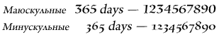
Допустимые значения: DigitCase.DEFAULT, DigitCase.LINING, DigitCase.OLD_STYLE, FormatValue.INHERIT.
По умолчанию значение равно undefined, что указывает на то, что оно не установлено.
Если значение равно undefined, в процессе каскада это свойство наследует свое значение от вышестоящего элемента. Если ни в одном из вышестоящих элементов этого свойства нет, то оно получает значение DigitCase.DEFAULT.
Реализация
public function get digitCase():* public function set digitCase(value:any):voidВыдает
RangeError — когда заданное значение находится за пределами диапазона данного свойства
|
Связанные элементы API
digitWidth | свойство |
digitWidth:*| Язык версии: | ActionScript 3.0 |
| Версии среды выполнения: | Flash Player 10, AIR 1.5 |
TextLayoutFormat: тип ширины цифр, используемых для текста. Может иметь значение DigitWidth.PROPORTIONAL, которое рекомендуется использовать для отдельных чисел, или DigitWidth.TABULAR, используемое для чисел в таблицах, диаграммах и вертикальных строках.
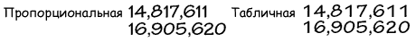
Допустимые значения: DigitWidth.DEFAULT, DigitWidth.PROPORTIONAL, DigitWidth.TABULAR, FormatValue.INHERIT.
По умолчанию значение равно undefined, что указывает на то, что оно не установлено.
Если значение равно undefined, в процессе каскада это свойство наследует свое значение от вышестоящего элемента. Если ни в одном из вышестоящих элементов этого свойства нет, то оно получает значение DigitWidth.DEFAULT.
Реализация
public function get digitWidth():* public function set digitWidth(value:any):voidВыдает
RangeError — когда заданное значение находится за пределами диапазона данного свойства
|
Связанные элементы API
direction | свойство |
direction:*| Язык версии: | ActionScript 3.0 |
| Версии среды выполнения: | Flash Player 10, AIR 1.5 |
TextLayoutFormat: задает уровень двунаправленной вложенности текста в блоке по умолчанию. Направление чтения слева направо, как в сценариях с латинским стилем, или справа налево, как в сценариях с арабским или еврейским. Это свойство также влияет на направление колонки, когда оно применяется на уровне контейнера. Колонки могут быть расположены либо слева направо, либо справа налево, так же, как и текст. Примеры:
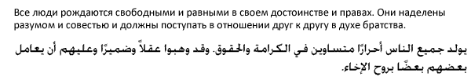
Допустимые значения: Direction.LTR, Direction.RTL, FormatValue.INHERIT.
По умолчанию значение равно undefined, что указывает на то, что оно не установлено.
Если значение равно undefined, в процессе каскада это свойство наследует свое значение от вышестоящего элемента. Если ни в одном из вышестоящих элементов этого свойства нет, то оно получает значение Direction.LTR.
Реализация
public function get direction():* public function set direction(value:any):voidВыдает
RangeError — когда заданное значение находится за пределами диапазона данного свойства
|
Связанные элементы API
dominantBaseline | свойство |
dominantBaseline:*| Язык версии: | ActionScript 3.0 |
| Версии среды выполнения: | Flash Player 10, AIR 1.5 |
TextLayoutFormat: указывает, какая из базовых линий элемента привязывается к alignmentBaseline для определения позиции элемента в строке по вертикали. Значение TextBaseline.AUTO выделяет доминирующую базовую линию, основывающуюся на свойстве locale родительского абзаца. Для японского и китайского языков значением выделенной базовой линией является TextBaseline.IDEOGRAPHIC_CENTER; для всех других - TextBaseline.ROMAN. Этот выбор базовых линий определяется выбором типа и размера шрифта.
Допустимые значения: FormatValue.AUTO, TextBaseline.ROMAN, TextBaseline.ASCENT, TextBaseline.DESCENT, TextBaseline.IDEOGRAPHIC_TOP, TextBaseline.IDEOGRAPHIC_CENTER, TextBaseline.IDEOGRAPHIC_BOTTOM, FormatValue.INHERIT.
По умолчанию значение равно undefined, что указывает на то, что оно не установлено.
Если значение равно undefined, в процессе каскада это свойство наследует свое значение от вышестоящего элемента. Если ни в одном из вышестоящих элементов данное свойство не установлено, оно получает значение FormatValue.AUTO.
Реализация
public function get dominantBaseline():* public function set dominantBaseline(value:any):voidВыдает
RangeError — когда заданное значение находится за пределами диапазона данного свойства
|
Связанные элементы API
firstBaselineOffset | свойство |
firstBaselineOffset:*| Язык версии: | ActionScript 3.0 |
| Версии среды выполнения: | Flash Player 10, AIR 1.5 |
TextLayoutFormat: указывает позицию базовой линии первой строки в контейнере. Базовая линия, к которой относится это свойство, зависит от локали на уровне контейнера. Для японского и китайского языка это — TextBaseline.IDEOGRAPHIC_BOTTOM; для всех других языков — TextBaseline.ROMAN. Смещение от верхнего отступа (или правого отступа, если blockProgression имеет значение RL) контейнера до базовой линии первой строки может иметь значение BaselineOffset.ASCENT, что означает равное верхнему выносному элементу строки, либо BaselineOffset.LINE_HEIGHT, что означает равное высоте этой первой строки, либо любое фиксированное число для указания абсолютного расстояния. Значение BaselineOffset.AUTO выравнивает верхний выносной элемент строки по верхнему отступу контейнера.
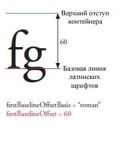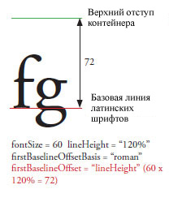 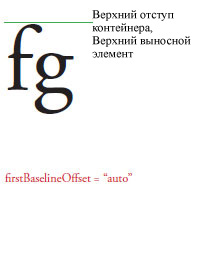
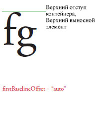
Допустимые строковые значения: BaselineOffset.AUTO, BaselineOffset.ASCENT, BaselineOffset.LINE_HEIGHT, FormatValue.INHERIT и числа от 0 до 1000.
По умолчанию значение равно undefined, что указывает на то, что оно не установлено.
Если значение равно undefined, в процессе каскада это свойство наследует свое значение от вышестоящего элемента. Если ни в одном из вышестоящих элементов этого свойства нет, то оно получает значение BaselineOffset.AUTO.
Реализация
public function get firstBaselineOffset():* public function set firstBaselineOffset(value:any):voidВыдает
RangeError — когда заданное значение находится за пределами диапазона данного свойства
|
Связанные элементы API
flowComposer | свойство |
flowComposer:IFlowComposer [только для чтения] | Язык версии: | ActionScript 3.0 |
| Версии среды выполнения: | Flash Player 10, AIR 1.5 |
Возвращает объект компоновщика потока, который составляет и выделяет текст в контейнере, управляемом этим контроллером.
Реализация
public function get flowComposer():IFlowComposerСвязанные элементы API
fontFamily | свойство |
fontFamily:*| Язык версии: | ActionScript 3.0 |
| Версии среды выполнения: | Flash Player 10, AIR 1.5 |
TextLayoutFormat: имя используемого шрифта или разделенный запятой список имен шрифтов. Среда выполнения Flash визуализирует элемент с помощью первого доступного шрифта в списке. Например, если задать Arial, Helvetica, _sans, то проигрыватель сначала выполняет поиск Arial, затем Helvetica, если Arial не обнаружен, а потом _sans, если не обнаружен ни тот, ни другой.
По умолчанию значение равно undefined, что указывает на то, что оно не установлено.
Если значение равно undefined, в процессе каскада это свойство наследует свое значение от вышестоящего элемента. Если ни в одном из вышестоящих элементов данное свойство не установлено, оно получает значение Arial.
Реализация
public function get fontFamily():* public function set fontFamily(value:any):voidВыдает
RangeError — когда заданное значение находится за пределами диапазона данного свойства
|
fontLookup | свойство |
fontLookup:*| Язык версии: | ActionScript 3.0 |
| Версии среды выполнения: | Flash Player 10, AIR 1.5 |
TextLayoutFormat: поиск используемых шрифтов. При указании FontLookup.DEVICE используются шрифты, установленные в системе, в которой выполняется SWF-файл. Использование шрифтов устройства сокращает размер ролика, но в различных системах и платформах текст не всегда отображается одинаково. При указании FontLookup.EMBEDDED_CFF используются контуры шрифтов, встроенные в опубликованный SWF-файл. Встроенные шрифты увеличивают размер файла SWF (иногда значительно), но текст в выбранном шрифте отображается последовательно.
Допустимые значения: FontLookup.DEVICE, FontLookup.EMBEDDED_CFF, FormatValue.INHERIT.
По умолчанию значение равно undefined, что указывает на то, что оно не установлено.
Если значение равно undefined, в процессе каскада это свойство наследует свое значение от вышестоящего элемента. Если ни в одном из вышестоящих элементов этого свойства нет, то оно получает значение FontLookup.DEVICE.
Реализация
public function get fontLookup():* public function set fontLookup(value:any):voidВыдает
RangeError — когда заданное значение находится за пределами диапазона данного свойства
|
Связанные элементы API
fontSize | свойство |
fontSize:*| Язык версии: | ActionScript 3.0 |
| Версии среды выполнения: | Flash Player 10, AIR 1.5 |
TextLayoutFormat: размер текста в пикселях.
Допустимые значения: числа от 1 до 720 и FormatValue.INHERIT.
По умолчанию значение равно undefined, что указывает на то, что оно не установлено.
Если значение равно undefined, в процессе каскада это свойство наследует свое значение от вышестоящего элемента. Если ни в одном из вышестоящих элементов данное свойство не установлено, оно получает значение 12.
Реализация
public function get fontSize():* public function set fontSize(value:any):voidВыдает
RangeError — когда заданное значение находится за пределами диапазона данного свойства
|
fontStyle | свойство |
fontStyle:*| Язык версии: | ActionScript 3.0 |
| Версии среды выполнения: | Flash Player 10, AIR 1.5 |
TextLayoutFormat: стиль текста. Можно использовать значение FontPosture.NORMAL для обычного текста или FontPosture.ITALIC для курсивного. Это свойство применяется только к шрифтам устройства (свойство fontLookup устанавливается на flash.text.engine. FontLookup.DEVICE).
Допустимые значения: FontPosture.NORMAL, FontPosture.ITALIC, FormatValue.INHERIT.
По умолчанию значение равно undefined, что указывает на то, что оно не установлено.
Если значение равно undefined, в процессе каскада это свойство наследует свое значение от вышестоящего элемента. Если ни в одном из вышестоящих элементов этого свойства нет, то оно получает значение FontPosture.NORMAL.
Реализация
public function get fontStyle():* public function set fontStyle(value:any):voidВыдает
RangeError — когда заданное значение находится за пределами диапазона данного свойства
|
Связанные элементы API
fontWeight | свойство |
fontWeight:*| Язык версии: | ActionScript 3.0 |
| Версии среды выполнения: | Flash Player 10, AIR 1.5 |
TextLayoutFormat: толщина текста. Может использоваться значение FontWeight.NORMAL для обычного текста или FontWeight.BOLD - для полужирного. Применяется только к шрифтам устройства (свойство fontLookup устанавливается на flash.text.engine. FontLookup.DEVICE).
Допустимые значения: FontWeight.NORMAL, FontWeight.BOLD, FormatValue.INHERIT.
По умолчанию значение равно undefined, что указывает на то, что оно не установлено.
Если значение равно undefined, в процессе каскада это свойство наследует свое значение от вышестоящего элемента. Если ни в одном из вышестоящих элементов этого свойства нет, то оно получает значение FontWeight.NORMAL.
Реализация
public function get fontWeight():* public function set fontWeight(value:any):voidВыдает
RangeError — когда заданное значение находится за пределами диапазона данного свойства
|
Связанные элементы API
format | свойство |
format:flashx.textLayout.formats:ITextLayoutFormat| Язык версии: | ActionScript 3.0 |
| Версии среды выполнения: | Flash Player 10, AIR 1.5 |
Сохраняет объект ITextLayoutFormat, содержащий атрибуты этого контейнера. Контроллер наследует свойства контейнера из TextFlow, частью которого он является. Это свойство позволяет различным контроллерам в одном текстовом потоке иметь, например, различные параметры настройки колонки или заполнение.
Реализация
public function get format():flashx.textLayout.formats:ITextLayoutFormat public function set format(value:flashx.textLayout.formats:ITextLayoutFormat):voidСвязанные элементы API
horizontalScrollPolicy | свойство |
horizontalScrollPolicy:String| Язык версии: | ActionScript 3.0 |
| Версии среды выполнения: | Flash Player 10, AIR 1.5 |
Определяет политику горизонтальной прокрутки, которую можно установить путем присвоения одной из констант класса ScrollPolicy: ON, OFF или AUTO.
Реализация
public function get horizontalScrollPolicy():String public function set horizontalScrollPolicy(value:String):voidСвязанные элементы API
horizontalScrollPosition | свойство |
horizontalScrollPosition:Number| Язык версии: | ActionScript 3.0 |
| Версии среды выполнения: | Flash Player 10, AIR 1.5 |
Определяет текущее местоположение горизонтальной прокрутки в рабочей области. Это значение определяет число пикселей слева.
Реализация
public function get horizontalScrollPosition():Number public function set horizontalScrollPosition(value:Number):voidinteractionManager | свойство |
interactionManager:ISelectionManager [только для чтения] | Язык версии: | ActionScript 3.0 |
| Версии среды выполнения: | Flash Player 10, AIR 1.5 |
InteractionManager, связанный с данным объектом TextFlow.
Управляет всеми выделениями и редактированием текста. Если TextFlow не может быть выбран, interactionManager будет иметь значение null. Чтобы сделать TextFlow доступным для редактирования, назначьте interactionManager, являющийся одновременно и ISelectionManager, и IEditManager. Чтобы сделать TextFlow доступным только для чтения и выделения, назначьте interactionManager, являющийся только ISelectionManager.
Реализация
public function get interactionManager():ISelectionManagerСвязанные элементы API
justificationRule | свойство |
justificationRule:*| Язык версии: | ActionScript 3.0 |
| Версии среды выполнения: | Flash Player 10, AIR 1.5 |
TextLayoutFormat: правило, используемое для выравнивания текста в абзаце. Значением по умолчанию является FormatValue.AUTO, которое выравнивает текст согласно свойству абзаца locale. Для всех языков, кроме японского и китайского, FormatValue.AUTO получает значение JustificationRule.SPACE, которое добавляет к символу пробела дополнительное пространство. Для японского и китайского языков FormatValue.AUTO имеет значение JustficationRule.EAST_ASIAN. Выравнивание частично изменяет интервал между знаками пунктуации. Запятая и японская точка занимают в латинице целый символ, в то время как восточно-азиатском тексте — только половину символа. Кроме того, согласно традиции, в восточно-азиатском тексте интервал между знаками пунктуации должен быть уже, чем между остальными символами. В нижеприведенном примере обратите внимание также на интерлиньяж, который применяется ко второй строке абзаца. В восточноазиатской версии последние две строки смещаются вправо. В латинской версии вторая и последующие строки смещаются влево.
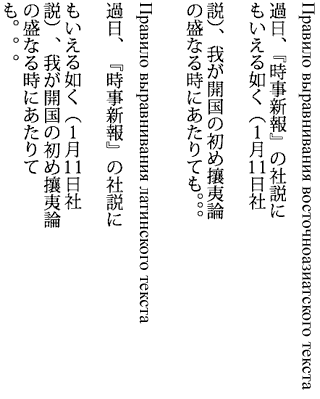
Допустимые значения: JustificationRule.EAST_ASIAN, JustificationRule.SPACE, FormatValue.AUTO, FormatValue.INHERIT.
По умолчанию значение равно undefined, что указывает на то, что оно не установлено.
Если значение равно undefined, в процессе каскада это свойство наследует свое значение от вышестоящего элемента. Если ни в одном из вышестоящих элементов данное свойство не установлено, оно получает значение FormatValue.AUTO.
Реализация
public function get justificationRule():* public function set justificationRule(value:any):voidВыдает
RangeError — когда заданное значение находится за пределами диапазона данного свойства
|
Связанные элементы API
justificationStyle | свойство |
justificationStyle:*| Язык версии: | ActionScript 3.0 |
| Версии среды выполнения: | Flash Player 10, AIR 1.5 |
TextLayoutFormat: стиль используемый для выравнивания абзаца. Используется только вместе с параметром justificationRule для JustificationRule.EAST_ASIAN. Значение по умолчанию FormatValue.AUTO относится к JustificationStyle.PUSH_IN_KINSOKU для всех локалей. Константы, определяемые классом JustificationStyle, указывают параметры обработки символов кинсоку — японских символов, которые не должны появляться в начале и конце строк. Если необходимо получить более разреженный текст, укажите JustificationStyle.PUSH-OUT-ONLY. Если необходимо использовать поведение, подобное тому, что получается при использовании justificationRule JustificationRule.SPACE, укажите JustificationStyle.PRIORITIZE-LEAST-ADJUSTMENT.
Допустимые значения: JustificationStyle.PRIORITIZE_LEAST_ADJUSTMENT, JustificationStyle.PUSH_IN_KINSOKU, JustificationStyle.PUSH_OUT_ONLY, FormatValue.AUTO, FormatValue.INHERIT.
По умолчанию значение равно undefined, что указывает на то, что оно не установлено.
Если значение равно undefined, в процессе каскада это свойство наследует свое значение от вышестоящего элемента. Если ни в одном из вышестоящих элементов данное свойство не установлено, оно получает значение FormatValue.AUTO.
Реализация
public function get justificationStyle():* public function set justificationStyle(value:any):voidВыдает
RangeError — когда заданное значение находится за пределами диапазона данного свойства
|
Связанные элементы API
kerning | свойство |
kerning:*| Язык версии: | ActionScript 3.0 |
| Версии среды выполнения: | Flash Player 10, AIR 1.5 |
TextLayoutFormat: кернинг регулирует количество пикселов между определенными парами символов с целью улучшения удобочитаемости текста. Кернинг поддерживается для всех шрифтов, имеющих таблицы кернинга.
Допустимые значения: Kerning.ON, Kerning.OFF, Kerning.AUTO, FormatValue.INHERIT.
По умолчанию значение равно undefined, что указывает на то, что оно не установлено.
Если значение равно undefined, в процессе каскада это свойство наследует свое значение от вышестоящего элемента. Если ни в одном из вышестоящих элементов этого свойства нет, то оно получает значение Kerning.AUTO.
Реализация
public function get kerning():* public function set kerning(value:any):voidВыдает
RangeError — когда заданное значение находится за пределами диапазона данного свойства
|
Связанные элементы API
leadingModel | свойство |
leadingModel:*| Язык версии: | ActionScript 3.0 |
| Версии среды выполнения: | Flash Player 10, AIR 1.5 |
TextLayoutFormat: указывает модель интерлиньяжа, которая является комбинацией основы и направления интерлиньяжа. Основа межстрочного интервала — это базовая линия, на которую ссылается свойство lineHeight. Направление межстрочного интервала определяет, относится ли свойство lineHeight к расстоянию от базовой линии строки до базовой линии строки, находящейся перед ней или за ней. Значение по умолчанию FormatValue.AUTO определяется на основе свойства абзаца locale. Для японского и китайского языков значение равно LeadingModel.IDEOGRAPHIC_TOP_DOWN, для всех других языков — LeadingModel.ROMAN_UP.
Основа межстрочного интервала:
 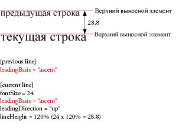
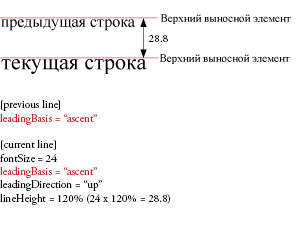 
Направление межстрочного интервала:


Допустимые значения: LeadingModel.ROMAN_UP, LeadingModel.IDEOGRAPHIC_TOP_UP, LeadingModel.IDEOGRAPHIC_CENTER_UP, LeadingModel.IDEOGRAPHIC_TOP_DOWN, LeadingModel.IDEOGRAPHIC_CENTER_DOWN, LeadingModel.APPROXIMATE_TEXT_FIELD, LeadingModel.ASCENT_DESCENT_UP, LeadingModel.BOX, LeadingModel.AUTO, FormatValue.INHERIT.
По умолчанию значение равно undefined, что указывает на то, что оно не установлено.
Если значение равно undefined, в процессе каскада это свойство наследует свое значение от вышестоящего элемента. Если ни в одном из вышестоящих элементов этого свойства нет, то оно получает значение LeadingModel.AUTO.
Реализация
public function get leadingModel():* public function set leadingModel(value:any):voidВыдает
RangeError — когда заданное значение находится за пределами диапазона данного свойства
|
Связанные элементы API
ligatureLevel | свойство |
ligatureLevel:*| Язык версии: | ActionScript 3.0 |
| Версии среды выполнения: | Flash Player 10, AIR 1.5 |
TextLayoutFormat: управляет тем, какая лигатура, определенная в шрифте, может использоваться в тексте. Лигатуры для каждого из этих параметров зависят от шрифта. Лигатура возникает, когда две или более литеры объединяются в один глиф. Лигатуры обычно заменяют последовательные символы с общими компонентами, такие как пары букв «fi», «fl» или «ae». Они используются как с латинскими, так и с нелатинскими наборами символов. Лигатуры, активируемые значениями MINIMUM, COMMON, UNCOMMON и EXOTIC являются аддитивными. Каждое значение активирует новый набор лигатур, при этом включая в себя все предыдущие типы.
Примечание. При работе со шрифтами арабского или сирийского языка для ligatureLevel устанавливается значение MINIMUM или выше.
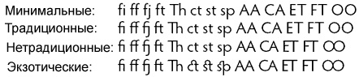
Допустимые значения: LigatureLevel.MINIMUM, LigatureLevel.COMMON, LigatureLevel.UNCOMMON, LigatureLevel.EXOTIC, FormatValue.INHERIT.
По умолчанию значение равно undefined, что указывает на то, что оно не установлено.
Если значение равно undefined, в процессе каскада это свойство наследует свое значение от вышестоящего элемента. Если ни в одном из вышестоящих элементов этого свойства нет, то оно получает значение LigatureLevel.COMMON.
Реализация
public function get ligatureLevel():* public function set ligatureLevel(value:any):voidВыдает
RangeError — когда заданное значение находится за пределами диапазона данного свойства
|
Связанные элементы API
lineBreak | свойство |
lineBreak:*| Язык версии: | ActionScript 3.0 |
| Версии среды выполнения: | Flash Player 10, AIR 1.5 |
TextLayoutFormat: управляет переносом слов в контейнере (принимает значение по умолчанию, если в процессе каскада было установлено значение undefined). Текст в контейнере можно настроить по ширине контейнера (LineBreak.TO_FIT), либо установить разрыв только при наличии символов возврата каретки или символов перевода строки (LineBreak.EXPLICIT).
Допустимые значения: LineBreak.EXPLICIT, LineBreak.TO_FIT, FormatValue.INHERIT.
По умолчанию значение равно undefined, что указывает на то, что оно не установлено.
Если это свойство не определено при каскадной операции, то оно получает значение LineBreak.TO_FIT.
Реализация
public function get lineBreak():* public function set lineBreak(value:any):voidВыдает
RangeError — когда заданное значение находится за пределами диапазона данного свойства
|
Связанные элементы API
lineHeight | свойство |
lineHeight:*| Язык версии: | ActionScript 3.0 |
| Версии среды выполнения: | Flash Player 10, AIR 1.5 |
TextLayoutFormat: управление интерлиньяжем текста. Расстояние от базовой линии предыдущей или следующей строки (в зависимости от LeadingModel) до базовой линии текущей строки равно максимальному межстрочному интервалу, применяемому в отношении любого символа в строке. Значение выражается либо числом, либо процентом. При указании процента вводится строковое значение, например, 140%.
 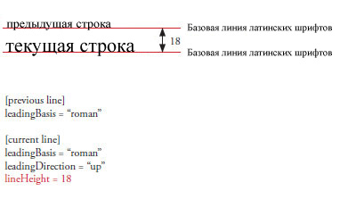
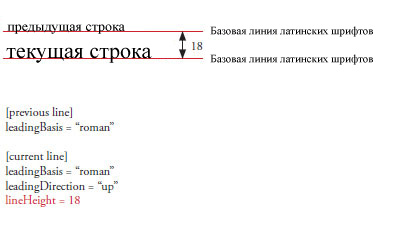
Допустимые числовые значения — от -720 до 720.
Допустимые процентные значения: от -1000% до 1000%.
Допустимые значения включают FormatValue.INHERIT.
По умолчанию значение равно undefined, что указывает на то, что оно не установлено.
Если значение равно undefined, в процессе каскада это свойство наследует свое значение от вышестоящего элемента. Если ни в одном из вышестоящих элементов данное свойство не установлено, оно получает значение 120%.
Реализация
public function get lineHeight():* public function set lineHeight(value:any):voidВыдает
RangeError — когда заданное значение находится за пределами диапазона данного свойства
|
lineThrough | свойство |
lineThrough:*| Язык версии: | ActionScript 3.0 |
| Версии среды выполнения: | Flash Player 10, AIR 1.5 |
TextLayoutFormat: если значение равно true, применяет перечеркивание, размещая линию посередине строки.
Допустимыми значениями являются true, false и FormatValue.INHERIT.
По умолчанию значение равно undefined, что указывает на то, что оно не установлено.
Если значение равно undefined, в процессе каскада это свойство наследует свое значение от вышестоящего элемента. Если ни в одном из вышестоящих элементов данное свойство не установлено, оно получает значение false.
Реализация
public function get lineThrough():* public function set lineThrough(value:any):voidВыдает
RangeError — когда заданное значение находится за пределами диапазона данного свойства
|
linkActiveFormat | свойство |
linkActiveFormat:*| Язык версии: | ActionScript 3.0 |
| Версии среды выполнения: | Flash Player 10, AIR 1.5 |
TextLayoutFormat: определяет атрибуты форматирования для ссылок в нормальном состоянии. Это значение передается вниз по иерархии и применяется ко всем нижестоящим ссылкам. Принимает inherit, ITextLayoutFormat или преобразует массив объектов с ключом и значением в объекты TextLayoutFormat.
Допустимые значения включают FormatValue.INHERIT.
По умолчанию значение равно undefined, что указывает на то, что оно не установлено.
Если значение равно undefined, в процессе каскада это свойство наследует свое значение от вышестоящего элемента. Если ни в одном из вышестоящих элементов данное свойство не установлено, оно получает значение null.
Реализация
public function get linkActiveFormat():* public function set linkActiveFormat(value:any):voidВыдает
RangeError — когда заданное значение находится за пределами диапазона данного свойства
|
linkHoverFormat | свойство |
linkHoverFormat:*| Язык версии: | ActionScript 3.0 |
| Версии среды выполнения: | Flash Player 10, AIR 1.5 |
TextLayoutFormat: определяет атрибуты форматирования, используемые для ссылок в состоянии наведения, когда указатель мыши находится в пределах ссылки. Это значение передается вниз по иерархии и применяется ко всем нижестоящим ссылкам. Принимает inherit, ITextLayoutFormat или преобразует массив объектов с ключом и значением в объекты TextLayoutFormat.
Допустимые значения включают FormatValue.INHERIT.
По умолчанию значение равно undefined, что указывает на то, что оно не установлено.
Если значение равно undefined, в процессе каскада это свойство наследует свое значение от вышестоящего элемента. Если ни в одном из вышестоящих элементов данное свойство не установлено, оно получает значение null.
Реализация
public function get linkHoverFormat():* public function set linkHoverFormat(value:any):voidВыдает
RangeError — когда заданное значение находится за пределами диапазона данного свойства
|
linkNormalFormat | свойство |
linkNormalFormat:*| Язык версии: | ActionScript 3.0 |
| Версии среды выполнения: | Flash Player 10, AIR 1.5 |
TextLayoutFormat: определяет атрибуты форматирования для ссылок в нормальном состоянии. Это значение передается вниз по иерархии и применяется ко всем нижестоящим ссылкам. Принимает inherit, ITextLayoutFormat или преобразует массив объектов с ключом и значением в объекты TextLayoutFormat.
Допустимые значения включают FormatValue.INHERIT.
По умолчанию значение равно undefined, что указывает на то, что оно не установлено.
Если значение равно undefined, в процессе каскада это свойство наследует свое значение от вышестоящего элемента. Если ни в одном из вышестоящих элементов данное свойство не установлено, оно получает значение null.
Реализация
public function get linkNormalFormat():* public function set linkNormalFormat(value:any):voidВыдает
RangeError — когда заданное значение находится за пределами диапазона данного свойства
|
listAutoPadding | свойство |
listAutoPadding:*| Язык версии: | ActionScript 3.0 |
| Версии среды выполнения: | Flash Player 10, AIR 1.5 |
TextLayoutFormat: определяет автоотступ начального края списков, если значением заполнения этой стороны списка является auto.
Допустимые значения: числа от -1000 до 1000 и FormatValue.INHERIT.
По умолчанию значение равно undefined, что указывает на то, что оно не установлено.
Если значение равно undefined, в процессе каскада это свойство наследует свое значение от вышестоящего элемента. Если ни в одном из вышестоящих элементов данное свойство не установлено, оно получает значение 40.
Реализация
public function get listAutoPadding():* public function set listAutoPadding(value:any):voidВыдает
RangeError — когда заданное значение находится за пределами диапазона данного свойства
|
listMarkerFormat | свойство |
listMarkerFormat:*| Язык версии: | ActionScript 3.0 |
| Версии среды выполнения: | Flash Player 10, AIR 1.5 |
TextLayoutFormat: определяет маркеры для списка атрибутов форматирования. Это значение передается вниз по иерархии и применяется ко всем нижестоящим ссылкам. Принимает inherit, IListMarkerFormat или преобразует массив объектов с ключом и значением в объекты ListMarkerFormat.
Допустимые значения включают FormatValue.INHERIT.
По умолчанию значение равно undefined, что указывает на то, что оно не установлено.
Если значение равно undefined, в процессе каскада это свойство наследует свое значение от вышестоящего элемента. Если ни в одном из вышестоящих элементов данное свойство не установлено, оно получает значение null.
Реализация
public function get listMarkerFormat():* public function set listMarkerFormat(value:any):voidВыдает
RangeError — когда заданное значение находится за пределами диапазона данного свойства
|
listStylePosition | свойство |
listStylePosition:*| Язык версии: | ActionScript 3.0 |
| Версии среды выполнения: | Flash Player 10, AIR 1.5 |
TextLayoutFormat:
Допустимые значения: ListStylePosition.INSIDE, ListStylePosition.OUTSIDE, FormatValue.INHERIT.
По умолчанию значение равно undefined, что указывает на то, что оно не установлено.
Если значение равно undefined, в процессе каскада это свойство наследует свое значение от вышестоящего элемента. Если ни в одном из вышестоящих элементов этого свойства нет, то оно получает значение ListStylePosition.OUTSIDE.
Реализация
public function get listStylePosition():* public function set listStylePosition(value:any):voidВыдает
RangeError — когда заданное значение находится за пределами диапазона данного свойства
|
Связанные элементы API
listStyleType | свойство |
listStyleType:*| Язык версии: | ActionScript 3.0 |
| Версии среды выполнения: | Flash Player 10, AIR 1.5 |
TextLayoutFormat:
Допустимые значения: ListStyleType.UPPER_ALPHA, ListStyleType.LOWER_ALPHA, ListStyleType.UPPER_ROMAN, ListStyleType.LOWER_ROMAN, ListStyleType.NONE, ListStyleType.DISC, ListStyleType.CIRCLE, ListStyleType.SQUARE, ListStyleType.BOX, ListStyleType.CHECK, ListStyleType.DIAMOND, ListStyleType.HYPHEN, ListStyleType.ARABIC_INDIC, ListStyleType.BENGALI, ListStyleType.DECIMAL, ListStyleType.DECIMAL_LEADING_ZERO, ListStyleType.DEVANAGARI, ListStyleType.GUJARATI, ListStyleType.GURMUKHI, ListStyleType.KANNADA, ListStyleType.PERSIAN, ListStyleType.THAI, ListStyleType.URDU, ListStyleType.CJK_EARTHLY_BRANCH, ListStyleType.CJK_HEAVENLY_STEM, ListStyleType.HANGUL, ListStyleType.HANGUL_CONSTANT, ListStyleType.HIRAGANA, ListStyleType.HIRAGANA_IROHA, ListStyleType.KATAKANA, ListStyleType.KATAKANA_IROHA, ListStyleType.LOWER_ALPHA, ListStyleType.LOWER_GREEK, ListStyleType.LOWER_LATIN, ListStyleType.UPPER_ALPHA, ListStyleType.UPPER_GREEK, ListStyleType.UPPER_LATIN, FormatValue.INHERIT.
По умолчанию значение равно undefined, что указывает на то, что оно не установлено.
Если значение равно undefined, в процессе каскада это свойство наследует свое значение от вышестоящего элемента. Если ни в одном из вышестоящих элементов этого свойства нет, то оно получает значение ListStyleType.DISC.
Реализация
public function get listStyleType():* public function set listStyleType(value:any):voidВыдает
RangeError — когда заданное значение находится за пределами диапазона данного свойства
|
Связанные элементы API
locale | свойство |
locale:*| Язык версии: | ActionScript 3.0 |
| Версии среды выполнения: | Flash Player 10, AIR 1.5 |
TextLayoutFormat: локаль текста. Управляет преобразованием регистра и формированием. Используются стандартные идентификаторы локали, описанные в техническом стандарте Unicode #35. Например, en, en_US и en-US относятся к английскому, а ja — к японскому.
По умолчанию значение равно undefined, что указывает на то, что оно не установлено.
Если значение равно undefined, в процессе каскада это свойство наследует свое значение от вышестоящего элемента. Если ни в одном из вышестоящих элементов данное свойство не установлено, оно получает значение en.
Реализация
public function get locale():* public function set locale(value:any):voidВыдает
RangeError — когда заданное значение находится за пределами диапазона данного свойства
|
paddingBottom | свойство |
paddingBottom:*| Язык версии: | ActionScript 3.0 |
| Версии среды выполнения: | Flash Player 10, AIR 1.5 |
TextLayoutFormat: нижний отступ в пикселах. По умолчанию для auto используется нулевое значение, кроме списков, открывающее расстояние которых равно 45. (принимает значение по умолчанию, если не определено во время каскада) Пробел между нижним краем контейнера и текстом. Значение: Number или auto.
При горизонтальном тексте в прокручиваемых контейнерах с несколькими колонками в первой и последующих колонках отобразится заполнение в виде пробела в нижней части контейнера, но для просмотра заполнения последней колонки при превышении текстом ширины контейнера придется выполнить прокрутку.
Допустимые строковые значения: FormatValue.AUTO, FormatValue.INHERIT и числа от -8000 до 8000.
По умолчанию значение равно undefined, что указывает на то, что оно не установлено.
Если это свойство не определено при каскадной операции, то оно получает значение FormatValue.AUTO.
Реализация
public function get paddingBottom():* public function set paddingBottom(value:any):voidВыдает
RangeError — когда заданное значение находится за пределами диапазона данного свойства
|
Связанные элементы API
paddingLeft | свойство |
paddingLeft:*| Язык версии: | ActionScript 3.0 |
| Версии среды выполнения: | Flash Player 10, AIR 1.5 |
TextLayoutFormat: левый отступ в пикселях. По умолчанию для auto используется нулевое значение, кроме списков, открывающее расстояние которых равно 45. (принимает значение по умолчанию, если не определено во время каскада) Пробел между левым краем контейнера и текстом. Значение: Number или auto.
При вертикальном тексте в прокручиваемых контейнерах с несколькими колонками в первой и последующих колонках отобразится заполнение в виде пробела в конечной части контейнера, но для просмотра заполнения последней колонки при превышении текстом ширины контейнера, придется выполнить прокрутку.
Допустимые строковые значения: FormatValue.AUTO, FormatValue.INHERIT и числа от -8000 до 8000.
По умолчанию значение равно undefined, что указывает на то, что оно не установлено.
Если это свойство не определено при каскадной операции, то оно получает значение FormatValue.AUTO.
Реализация
public function get paddingLeft():* public function set paddingLeft(value:any):voidВыдает
RangeError — когда заданное значение находится за пределами диапазона данного свойства
|
Связанные элементы API
paddingRight | свойство |
paddingRight:*| Язык версии: | ActionScript 3.0 |
| Версии среды выполнения: | Flash Player 10, AIR 1.5 |
TextLayoutFormat: правый отступ в пикселях. По умолчанию для auto используется нулевое значение, кроме списков, открывающее расстояние которых равно 45. (принимает значение по умолчанию, если не определено во время каскада) Пробел между правым краем контейнера и текстом. Значение: Number или auto.
Допустимые строковые значения: FormatValue.AUTO, FormatValue.INHERIT и числа от -8000 до 8000.
По умолчанию значение равно undefined, что указывает на то, что оно не установлено.
Если это свойство не определено при каскадной операции, то оно получает значение FormatValue.AUTO.
Реализация
public function get paddingRight():* public function set paddingRight(value:any):voidВыдает
RangeError — когда заданное значение находится за пределами диапазона данного свойства
|
Связанные элементы API
paddingTop | свойство |
paddingTop:*| Язык версии: | ActionScript 3.0 |
| Версии среды выполнения: | Flash Player 10, AIR 1.5 |
TextLayoutFormat: верхний отступ в пикселях. По умолчанию для auto используется нулевое значение, кроме списков, открывающее расстояние которых равно 45. (принимает значение по умолчанию, если не определено во время каскада) Пробел между верхним краем контейнера и текстом. Значение: Number или auto.
Допустимые строковые значения: FormatValue.AUTO, FormatValue.INHERIT и числа от -8000 до 8000.
По умолчанию значение равно undefined, что указывает на то, что оно не установлено.
Если это свойство не определено при каскадной операции, то оно получает значение FormatValue.AUTO.
Реализация
public function get paddingTop():* public function set paddingTop(value:any):voidВыдает
RangeError — когда заданное значение находится за пределами диапазона данного свойства
|
Связанные элементы API
paragraphEndIndent | свойство |
paragraphEndIndent:*| Язык версии: | ActionScript 3.0 |
| Версии среды выполнения: | Flash Player 10, AIR 1.5 |
TextLayoutFormat: число, указывающее величину отступа для правого края абзаца, в пикселях. Относится к правому краю в текстах, написанных слева направо, и к левому краю в текстах, написанных справа налево.
Допустимые значения: числа от 0 до 8000 и FormatValue.INHERIT.
По умолчанию значение равно undefined, что указывает на то, что оно не установлено.
Если значение равно undefined, в процессе каскада это свойство наследует свое значение от вышестоящего элемента. Если ни в одном из вышестоящих элементов данное свойство не установлено, оно получает значение 0.
Реализация
public function get paragraphEndIndent():* public function set paragraphEndIndent(value:any):voidВыдает
RangeError — когда заданное значение находится за пределами диапазона данного свойства
|
paragraphSpaceAfter | свойство |
paragraphSpaceAfter:*| Язык версии: | ActionScript 3.0 |
| Версии среды выполнения: | Flash Player 10, AIR 1.5 |
TextLayoutFormat: число, определяющее величину интервала в пикселях, оставляемого после абзаца. Сворачивается вместе с paragraphSpaceBefore.
Допустимые значения: числа от 0 до 8000 и FormatValue.INHERIT.
По умолчанию значение равно undefined, что указывает на то, что оно не установлено.
Если значение равно undefined, в процессе каскада это свойство наследует свое значение от вышестоящего элемента. Если ни в одном из вышестоящих элементов данное свойство не установлено, оно получает значение 0.
Реализация
public function get paragraphSpaceAfter():* public function set paragraphSpaceAfter(value:any):voidВыдает
RangeError — когда заданное значение находится за пределами диапазона данного свойства
|
paragraphSpaceBefore | свойство |
paragraphSpaceBefore:*| Язык версии: | ActionScript 3.0 |
| Версии среды выполнения: | Flash Player 10, AIR 1.5 |
TextLayoutFormat: число, определяющее величину интервала в пикселях, оставляемого перед абзацем. Сворачивается вместе с paragraphSpaceAfter.
Допустимые значения: числа от 0 до 8000 и FormatValue.INHERIT.
По умолчанию значение равно undefined, что указывает на то, что оно не установлено.
Если значение равно undefined, в процессе каскада это свойство наследует свое значение от вышестоящего элемента. Если ни в одном из вышестоящих элементов данное свойство не установлено, оно получает значение 0.
Реализация
public function get paragraphSpaceBefore():* public function set paragraphSpaceBefore(value:any):voidВыдает
RangeError — когда заданное значение находится за пределами диапазона данного свойства
|
paragraphStartIndent | свойство |
paragraphStartIndent:*| Язык версии: | ActionScript 3.0 |
| Версии среды выполнения: | Flash Player 10, AIR 1.5 |
TextLayoutFormat: число, указывающее величину отступа для левого края абзаца, в пикселях. Относится к левому краю в текстах, написанных слева направо, и к правому краю в текстах, написанных справа налево.
Допустимые значения: числа от 0 до 8000 и FormatValue.INHERIT.
По умолчанию значение равно undefined, что указывает на то, что оно не установлено.
Если значение равно undefined, в процессе каскада это свойство наследует свое значение от вышестоящего элемента. Если ни в одном из вышестоящих элементов данное свойство не установлено, оно получает значение 0.
Реализация
public function get paragraphStartIndent():* public function set paragraphStartIndent(value:any):voidВыдает
RangeError — когда заданное значение находится за пределами диапазона данного свойства
|
renderingMode | свойство |
renderingMode:*| Язык версии: | ActionScript 3.0 |
| Версии среды выполнения: | Flash Player 10, AIR 1.5 |
TextLayoutFormat: режим визуализации, используемый для данного текста. Применяется только к встроенным шрифтам (для свойства fontLookup устанавливается значение FontLookup.EMBEDDED_CFF).
Допустимые значения: RenderingMode.NORMAL, RenderingMode.CFF, FormatValue.INHERIT.
По умолчанию значение равно undefined, что указывает на то, что оно не установлено.
Если значение равно undefined, в процессе каскада это свойство наследует свое значение от вышестоящего элемента. Если ни в одном из вышестоящих элементов этого свойства нет, то оно получает значение RenderingMode.CFF.
Реализация
public function get renderingMode():* public function set renderingMode(value:any):voidВыдает
RangeError — когда заданное значение находится за пределами диапазона данного свойства
|
Связанные элементы API
rootElement | свойство |
rootElement:ContainerFormattedElement [только для чтения] | Язык версии: | ActionScript 3.0 |
| Версии среды выполнения: | Flash Player 10, AIR 1.5 |
Возвращает корневой элемент, отображаемый в контейнере. Корневым элементом может быть, например, экземпляр DivElement или TextFlow.
Реализация
public function get rootElement():ContainerFormattedElementСвязанные элементы API
styleName | свойство |
styleName:*| Язык версии: | ActionScript 3.0 |
| Версии среды выполнения: | Flash Player 10, AIR 1.5 |
TextLayoutFormat: присваивает элементу класс-идентификатор, позволяя задавать стиль для элемента путем ссылки на его styleName.
По умолчанию значение равно undefined, что указывает на то, что оно не установлено.
Если undefined, в процессе каскада свойство получает значение null.
Реализация
public function get styleName():* public function set styleName(value:any):voidВыдает
RangeError — когда заданное значение находится за пределами диапазона данного свойства
|
styles | свойство |
styles:Object [только для чтения] | Язык версии: | ActionScript 3.0 |
| Версии среды выполнения: | Flash Player 10, AIR 1.5 |
Возвращает стили в ContainerController. Обратите внимание, что получатель создает копию словаря стилей. Возвращаемый объект включает в себя все стили, установленные в свойстве формата, в том числе базовые и пользовательские стили. Возвращенный объект состоит из массива пар имя стиля-значение.
Реализация
public function get styles():ObjectСвязанные элементы API
tabStops | свойство |
tabStops:*| Язык версии: | ActionScript 3.0 |
| Версии среды выполнения: | Flash Player 10, AIR 1.5 |
TextLayoutFormat: указывает позиции табуляции, связанные с абзацем. Функции присвоения могут принимать массив TabStopFormat, сжатое строковое представление, undefined или FormatValue.INHERIT. Сжатое строковое представление всегда преобразуется в массив TabStopFormat.
Строковый формат представляет собой список позиций табуляции, где каждая точка табуляции отделена одним или несколькими пробелами.
Позиция табуляции принимает следующую форму: <тип выравнивания><позиция выравнивания>|<метка выравнивания>.
Тип выравнивания представляет собой одиночный символ и может иметь значение S, E, C или D (или эквиваленты нижнего регистра). S или s означает start, E или e — end, C или c — center, D или d — decimal. Тип выравнивания является необязательным параметром, и если он не определен, то по умолчанию принимается значение S.
Позиция выравнивания представляет собой число, и определяется в соответствии со спецификацией FXG для чисел (десятичное число или экспоненциальное представление). Позиция выравнивания является обязательным параметром.
Вертикальная черта используется для отделения позиции выравнивания от метки выравнивания, и используется только в случае, если имеется метка выравнивания.
Метка выравнивания не является обязательной при типе выравнивания D, и не должна присутствовать при типе выравнивания, отличном от D. Метка выравнивания может представлять собой любую последовательностью символов, прерываемых пробелом, оканчивающим позицию табуляции (для последней позиции табуляции завершающий пробел не является обязательным; здесь подразумевается конец метки выравнивания). Пробел может быть частью метки выравнивания, если он маскируется обратной косой чертой (\). Обратная косая черта может быть частью метки выравнивания, она маскируется другой обратной косой чертой (\\). Если используется тип выравнивания D, а метка выравнивания не указана, то она примет значение по умолчанию null.
По умолчанию значение равно undefined, что указывает на то, что оно не установлено.
Если значение равно undefined, в процессе каскада это свойство наследует свое значение от вышестоящего элемента. Если ни в одном из вышестоящих элементов данное свойство не установлено, оно получает значение null.
Реализация
public function get tabStops():* public function set tabStops(value:any):voidВыдает
RangeError — когда заданное значение находится за пределами диапазона данного свойства
|
Связанные элементы API
textAlign | свойство |
textAlign:*| Язык версии: | ActionScript 3.0 |
| Версии среды выполнения: | Flash Player 10, AIR 1.5 |
TextLayoutFormat: выравнивание строк в абзаце относительно контейнера. TextAlign.LEFT выравнивает строки по левому краю контейнера. TextAlign.RIGHT выравнивает строки по правому краю. TextAlign.CENTER помещает строку на равном расстоянии от левого и правого краев. TextAlign.JUSTIFY выравнивает строки по ширине контейнера. TextAlign.START эквивалентен установке left в тексте слева направо, или right в тексте справа налево. TextAlign.END эквивалентен установке right в тексте слева направо, или left в тексте справа налево.
Допустимые значения: TextAlign.LEFT, TextAlign.RIGHT, TextAlign.CENTER, TextAlign.JUSTIFY, TextAlign.START, TextAlign.END, FormatValue.INHERIT.
По умолчанию значение равно undefined, что указывает на то, что оно не установлено.
Если значение равно undefined, в процессе каскада это свойство наследует свое значение от вышестоящего элемента. Если ни в одном из вышестоящих элементов этого свойства нет, то оно получает значение TextAlign.START.
Реализация
public function get textAlign():* public function set textAlign(value:any):voidВыдает
RangeError — когда заданное значение находится за пределами диапазона данного свойства
|
Связанные элементы API
textAlignLast | свойство |
textAlignLast:*| Язык версии: | ActionScript 3.0 |
| Версии среды выполнения: | Flash Player 10, AIR 1.5 |
TextLayoutFormat: выравнивание последней (или единственной) строки в абзаце относительно контейнера в выровненном тексте. Если для textAlign установлено значение TextAlign.JUSTIFY, то textAlignLast определяет способ выравнивания последней строки (или единственной строки, если блок состоит из одной строки). Значения подобны значениям textAlign.
Допустимые значения: TextAlign.LEFT, TextAlign.RIGHT, TextAlign.CENTER, TextAlign.JUSTIFY, TextAlign.START, TextAlign.END, FormatValue.INHERIT.
По умолчанию значение равно undefined, что указывает на то, что оно не установлено.
Если значение равно undefined, в процессе каскада это свойство наследует свое значение от вышестоящего элемента. Если ни в одном из вышестоящих элементов этого свойства нет, то оно получает значение TextAlign.START.
Реализация
public function get textAlignLast():* public function set textAlignLast(value:any):voidВыдает
RangeError — когда заданное значение находится за пределами диапазона данного свойства
|
Связанные элементы API
textAlpha | свойство |
textAlpha:*| Язык версии: | ActionScript 3.0 |
| Версии среды выполнения: | Flash Player 10, AIR 1.5 |
TextLayoutFormat: альфа-значение (прозрачности) для текста. При значении 0 обеспечивается полная прозрачность, а при значении 1 — полная непрозрачность. Экранные объекты, для которых значение textAlpha равно 0, являются активными, несмотря на их невидимость.
Допустимые значения: числа от 0 до 1 и FormatValue.INHERIT.
По умолчанию значение равно undefined, что указывает на то, что оно не установлено.
Если значение равно undefined, в процессе каскада это свойство наследует свое значение от вышестоящего элемента. Если ни в одном из вышестоящих элементов данное свойство не установлено, оно получает значение 1.
Реализация
public function get textAlpha():* public function set textAlpha(value:any):voidВыдает
RangeError — когда заданное значение находится за пределами диапазона данного свойства
|
textDecoration | свойство |
textDecoration:*| Язык версии: | ActionScript 3.0 |
| Версии среды выполнения: | Flash Player 10, AIR 1.5 |
TextLayoutFormat: оформление в тексте. Используется для подчеркивания текста; значение по умолчанию — none.
Допустимые значения: TextDecoration.NONE, TextDecoration.UNDERLINE, FormatValue.INHERIT.
По умолчанию значение равно undefined, что указывает на то, что оно не установлено.
Если значение равно undefined, в процессе каскада это свойство наследует свое значение от вышестоящего элемента. Если ни в одном из вышестоящих элементов этого свойства нет, то оно получает значение TextDecoration.NONE.
Реализация
public function get textDecoration():* public function set textDecoration(value:any):voidВыдает
RangeError — когда заданное значение находится за пределами диапазона данного свойства
|
Связанные элементы API
textFlow | свойство |
textFlow:flashx.textLayout.elements:TextFlow [только для чтения] | Язык версии: | ActionScript 3.0 |
| Версии среды выполнения: | Flash Player 10, AIR 1.5 |
Возвращает объект TextFlow, содержимое которого отображается в контейнере. Значения textFlow и rootElement либо являются одинаковыми, либо представляют собой объект корневого элемента TextFlow. Например, если корневым элементом контейнера является DivElement, то значение будет объектом TextFlow, к которому принадлежит DivElement.
Реализация
public function get textFlow():flashx.textLayout.elements:TextFlowСвязанные элементы API
textIndent | свойство |
textIndent:*| Язык версии: | ActionScript 3.0 |
| Версии среды выполнения: | Flash Player 10, AIR 1.5 |
TextLayoutFormat: число, определяющее величину отступа первой строки абзаца в пикселях. Отрицательный отступ перенесет строку на поля или даже за границы контейнера.
Допустимые значения: числа от -8000 до 8000 и FormatValue.INHERIT.
По умолчанию значение равно undefined, что указывает на то, что оно не установлено.
Если значение равно undefined, в процессе каскада это свойство наследует свое значение от вышестоящего элемента. Если ни в одном из вышестоящих элементов данное свойство не установлено, оно получает значение 0.
Реализация
public function get textIndent():* public function set textIndent(value:any):voidВыдает
RangeError — когда заданное значение находится за пределами диапазона данного свойства
|
textJustify | свойство |
textJustify:*| Язык версии: | ActionScript 3.0 |
| Версии среды выполнения: | Flash Player 10, AIR 1.5 |
TextLayoutFormat: указывает параметры выравнивания текста. Значением по умолчанию является TextJustify.INTER_WORD, что означает добавление дополнительного пробела к знакам пробела. TextJustify.DISTRIBUTE добавляет дополнительный пробел к знакам пробела и между отдельными буквами. Используется только вместе с justificationRule параметра JustificationRule.SPACE.
Допустимые значения: TextJustify.INTER_WORD, TextJustify.DISTRIBUTE, FormatValue.INHERIT.
По умолчанию значение равно undefined, что указывает на то, что оно не установлено.
Если значение равно undefined, в процессе каскада это свойство наследует свое значение от вышестоящего элемента. Если ни в одном из вышестоящих элементов этого свойства нет, то оно получает значение TextJustify.INTER_WORD.
Реализация
public function get textJustify():* public function set textJustify(value:any):voidВыдает
RangeError — когда заданное значение находится за пределами диапазона данного свойства
|
Связанные элементы API
textLength | свойство |
textLength:int [только для чтения] | Язык версии: | ActionScript 3.0 |
| Версии среды выполнения: | Flash Player 10, AIR 1.5 |
Возвращает общее количество символов в контейнере. Если контейнер является прокручиваемым, он может содержать текст, не отображаемый в данный момент. Это значение обновляется при создании текста (при вызове методов IFlowComposer compose() или updateAllControllers()).
Реализация
public function get textLength():intСвязанные элементы API
textRotation | свойство |
textRotation:*| Язык версии: | ActionScript 3.0 |
| Версии среды выполнения: | Flash Player 10, AIR 1.5 |
TextLayoutFormat: указывает число градусов для поворота данного текста.
Допустимые значения: TextRotation.ROTATE_0, TextRotation.ROTATE_180, TextRotation.ROTATE_270, TextRotation.ROTATE_90, TextRotation.AUTO, FormatValue.INHERIT.
По умолчанию значение равно undefined, что указывает на то, что оно не установлено.
Если значение равно undefined, в процессе каскада это свойство наследует свое значение от вышестоящего элемента. Если ни в одном из вышестоящих элементов этого свойства нет, то оно получает значение TextRotation.AUTO.
Реализация
public function get textRotation():* public function set textRotation(value:any):voidВыдает
RangeError — когда заданное значение находится за пределами диапазона данного свойства
|
Связанные элементы API
trackingLeft | свойство |
trackingLeft:*| Язык версии: | ActionScript 3.0 |
| Версии среды выполнения: | Flash Player 10, AIR 1.5 |
TextLayoutFormat: число в пикселях (или процент от fontSize, например, 120%), определяющее размер трекинга (ручного кернинга), применяемого слева от каждого символа. Если kerning включен, значение trackingLeft добавляется к значениям в таблице кернинга для шрифта. Если kerning выключен, значение trackingLeft используется в качестве значения ручного кернинга. Поддерживает как положительные, так и отрицательные значения.
Допустимые числовые значения — от -1000 до 1000.
Допустимые процентные значения: от -1000% до 1000%.
Допустимые значения включают FormatValue.INHERIT.
По умолчанию значение равно undefined, что указывает на то, что оно не установлено.
Если значение равно undefined, в процессе каскада это свойство наследует свое значение от вышестоящего элемента. Если ни в одном из вышестоящих элементов данное свойство не установлено, оно получает значение 0.
Реализация
public function get trackingLeft():* public function set trackingLeft(value:any):voidВыдает
RangeError — когда заданное значение находится за пределами диапазона данного свойства
|
trackingRight | свойство |
trackingRight:*| Язык версии: | ActionScript 3.0 |
| Версии среды выполнения: | Flash Player 10, AIR 1.5 |
TextLayoutFormat: число в пикселях (или процент от fontSize, например, 120%), определяющее размер трекинга (ручного кернинга), применяемого справа от каждого символа Если kerning включен, значение trackingRight добавляется к значениям в таблице кернинга для шрифта. Если kerning выключен, значение trackingRight используется в качестве значения ручного кернинга. Поддерживает как положительные, так и отрицательные значения.
Допустимые числовые значения — от -1000 до 1000.
Допустимые процентные значения: от -1000% до 1000%.
Допустимые значения включают FormatValue.INHERIT.
По умолчанию значение равно undefined, что указывает на то, что оно не установлено.
Если значение равно undefined, в процессе каскада это свойство наследует свое значение от вышестоящего элемента. Если ни в одном из вышестоящих элементов данное свойство не установлено, оно получает значение 0.
Реализация
public function get trackingRight():* public function set trackingRight(value:any):voidВыдает
RangeError — когда заданное значение находится за пределами диапазона данного свойства
|
typographicCase | свойство |
typographicCase:*| Язык версии: | ActionScript 3.0 |
| Версии среды выполнения: | Flash Player 10, AIR 1.5 |
TextLayoutFormat: тип регистра, используемого для данного текста. Примеры:

Допустимые значения: TLFTypographicCase.DEFAULT, TLFTypographicCase.CAPS_TO_SMALL_CAPS, TLFTypographicCase.UPPERCASE, TLFTypographicCase.LOWERCASE, TLFTypographicCase.LOWERCASE_TO_SMALL_CAPS, FormatValue.INHERIT.
По умолчанию значение равно undefined, что указывает на то, что оно не установлено.
Если значение равно undefined, в процессе каскада это свойство наследует свое значение от вышестоящего элемента. Если ни в одном из вышестоящих элементов этого свойства нет, то оно получает значение TLFTypographicCase.DEFAULT.
Реализация
public function get typographicCase():* public function set typographicCase(value:any):voidВыдает
RangeError — когда заданное значение находится за пределами диапазона данного свойства
|
Связанные элементы API
userStyles | свойство |
userStyles:Object| Язык версии: | ActionScript 3.0 |
| Версии среды выполнения: | Flash Player 10, AIR 1.5 |
Позволяет считывать и записывать стили пользователя в объект ContainerController. Учтите, что при чтении этого свойства для копии userStyles устанавливается формат этого элемента.
Реализация
public function get userStyles():Object public function set userStyles(value:Object):voidverticalAlign | свойство |
verticalAlign:*| Язык версии: | ActionScript 3.0 |
| Версии среды выполнения: | Flash Player 10, AIR 1.5 |
TextLayoutFormat: выравнивание по вертикали (принимает значение по умолчанию, если в процессе каскада было установлено значение undefined). Определяет способ выравнивания элементов TextFlow в контейнере.
Допустимые значения: VerticalAlign.TOP, VerticalAlign.MIDDLE, VerticalAlign.BOTTOM, VerticalAlign.JUSTIFY, FormatValue.INHERIT.
По умолчанию значение равно undefined, что указывает на то, что оно не установлено.
Если это свойство не определено при каскадной операции, то оно получает значение VerticalAlign.TOP.
Реализация
public function get verticalAlign():* public function set verticalAlign(value:any):voidВыдает
RangeError — когда заданное значение находится за пределами диапазона данного свойства
|
Связанные элементы API
verticalScrollPolicy | свойство |
verticalScrollPolicy:String| Язык версии: | ActionScript 3.0 |
| Версии среды выполнения: | Flash Player 10, AIR 1.5 |
Определяет политику вертикальной прокрутки, устанавливаемую присвоением одной из констант класса ScrollPolicy: ON, OFF или AUTO.
Реализация
public function get verticalScrollPolicy():String public function set verticalScrollPolicy(value:String):voidСвязанные элементы API
verticalScrollPosition | свойство |
verticalScrollPosition:Number| Язык версии: | ActionScript 3.0 |
| Версии среды выполнения: | Flash Player 10, AIR 1.5 |
Определяет текущее положение вертикальной прокрутки в рабочей области. Это значение определяет расстояние в пикселях от верхнего края.
Реализация
public function get verticalScrollPosition():Number public function set verticalScrollPosition(value:Number):voidwhiteSpaceCollapse | свойство |
whiteSpaceCollapse:*| Язык версии: | ActionScript 3.0 |
| Версии среды выполнения: | Flash Player 10, AIR 1.5 |
TextLayoutFormat: сворачивает или сохраняет пустое пространство при импорте текста в TextFlow. WhiteSpaceCollapse.PRESERVE сохраняет все символы пробела. WhiteSpaceCollapse.COLLAPSE удаляет символы новой строки, табуляции, а также начальные и концевые пробелы в блоке импортированного текста. Теги разрыва строк () и символы разделителя строк Unicode сохраняются.
Допустимые значения: WhiteSpaceCollapse.PRESERVE, WhiteSpaceCollapse.COLLAPSE, FormatValue.INHERIT.
По умолчанию значение равно undefined, что указывает на то, что оно не установлено.
Если значение равно undefined, в процессе каскада это свойство наследует свое значение от вышестоящего элемента. Если ни в одном из вышестоящих элементов этого свойства нет, то оно получает значение WhiteSpaceCollapse.COLLAPSE.
Реализация
public function get whiteSpaceCollapse():* public function set whiteSpaceCollapse(value:any):voidВыдает
RangeError — когда заданное значение находится за пределами диапазона данного свойства
|
Связанные элементы API
wordSpacing | свойство |
wordSpacing:*| Язык версии: | ActionScript 3.0 |
| Версии среды выполнения: | Flash Player 10, AIR 1.5 |
TextLayoutFormat: указывает оптимальный, минимальный и максимальный интервал (как множитель к ширине обычного интервала) между словами для использования при выравнивании. Оптимальное пространство для обозначения требуемого размера пространства в виде части значения, определенного в настройках шрифта. Минимальные и максимальные значения, которые используются, когда textJustify определяет ширину пробелов между словами перед использованием трекинга для выравнивания строки.
Допустимые процентные значения: от -1000% до 1000%.
Допустимые значения включают FormatValue.INHERIT.
По умолчанию значение равно undefined, что указывает на то, что оно не установлено.
Если значение равно undefined, в процессе каскада это свойство наследует свое значение от вышестоящего элемента. Если ни в одном из вышестоящих элементов данное свойство не установлено, оно получает значение 100 %, 50 %, 150 %.
Реализация
public function get wordSpacing():* public function set wordSpacing(value:any):voidВыдает
RangeError — когда заданное значение находится за пределами диапазона данного свойства
|
ContainerController | () | Конструктор |
public function ContainerController(container:Sprite, compositionWidth:Number = 100, compositionHeight:Number = 100)| Язык версии: | ActionScript 3.0 |
| Версии среды выполнения: | Flash Player 10, AIR 1.5 |
Конструктор создает экземпляр ContainerController. ContainerController по умолчанию имеет параметры compositionWidth и compositionHeight; если пользователь не указал ширину и высоту, в контейнере отображается фрагмент текста.
container:Sprite — DisplayObjectContainer для управления текстовыми строками.
| |
compositionWidth:Number (default = 100) | |
compositionHeight:Number (default = 100) |
activateHandler | () | метод |
public function activateHandler(event:Event):void| Язык версии: | ActionScript 3.0 |
| Версии среды выполнения: | Flash Player 10, AIR 1.5 |
Обрабатывает событие Event.ACTIVATE при управлении событиями клиентом.
Параметры
event:Event — Объект Event.
|
Связанные элементы API
Пример ( Использование этого примера )
package flashx.textLayout.container.examples
{
import flash.display.Sprite;
import flash.events.Event;
import flashx.textLayout.container.ContainerController;
public class ContainerController_activateHandlerExample extends ContainerController
{
public function ContainerController_activateHandlerExample(container:Sprite, compositionWidth:Number=100, compositionHeight:Number=100)
{
super(container, compositionWidth, compositionHeight);
}
override public function activateHandler(event:Event):void
{
// run the TLF handler for the activate event
super.activateHandler(event);
// and add your own code for the event
trace("You are in activateHandler()");
}
}
}
addBackgroundShape | () | метод |
protected function addBackgroundShape(shape:Shape):void| Язык версии: | ActionScript 3.0 |
| Версии среды выполнения: | Flash Player 10, AIR 1.5 |
Добавляет объект flash.display.Shape, на котором нарисованы фоновые формы (например, цвет фона). Реализация по умолчанию этого перезаписываемого метода добавляет объект к container непосредственно перед первым дочерним объектом flash.text.engine.TextLine, если он существует, в остальных случаях после последнего существующего дочернего объекта.
Параметры
shape:Shape — Добавляемый объект flash.display.Shape
|
Связанные элементы API
addInlineGraphicElement | () | метод |
protected function addInlineGraphicElement(parent:DisplayObjectContainer, inlineGraphicElement:DisplayObject, index:int):void| Язык версии: | ActionScript 3.0 |
| Версии среды выполнения: | Flash Player 10, AIR 2.0 |
Добавляет объект flash.display.DisplayObject в качестве потомка parent. Реализация по умолчанию этого перезаписываемого метода добавляет объект в виде прямого нижестоящего объекта parent в указанном индексе. Он вызывается для добавления InlineGraphicElements к TextLine или контейнеру.
Параметры
parent:DisplayObjectContainer — Объект flash.display.DisplayObjectContainer, к которому добавляется inlineGraphicElement
| |
inlineGraphicElement:DisplayObject — Объект flash.display.DisplayObject для добавления
| |
index:int — Индекс вставки плавающего объекта в вышестоящий объект
|
Связанные элементы API
addSelectionContainer | () | метод |
protected function addSelectionContainer(selectionContainer:DisplayObjectContainer):void| Язык версии: | ActionScript 3.0 |
| Версии среды выполнения: | Flash Player 10, AIR 1.5 |
Добавляет объект flash.display.DisplayObjectContainer, к которому добавлены формы выборки (например, выделение блока, курсор и т. д.) . Реализация по умолчанию перезаписываемого метода имеет следующие варианты поведения: объект добавляется непосредственно перед первым дочерним объектом flash.text.engine.TextLine для container, если он существует, и объект является непрозрачным и имеет стандартный режим наложения. Во всех остальных случаях объект добавляется как последний дочерний объект container.
Параметры
selectionContainer:DisplayObjectContainer — Добавляемый объект flash.display.DisplayObjectContainer
|
Связанные элементы API
addTextLine | () | метод |
protected function addTextLine(textLine:flash.text.engine:TextLine, index:int):void| Язык версии: | ActionScript 3.0 |
| Версии среды выполнения: | Flash Player 10, AIR 1.5 |
Добавляет объект flash.text.engine.TextLine в виде потомка container. Реализация по умолчанию этого перезаписываемого метода добавляет объект в виде прямого дочернего объекта container в указанном индексе.
Параметры
textLine:flash.text.engine:TextLine — Добавляемый объект flash.text.engine.TextLine
| |
index:int — Индекс вставки текстовой строки в родительский объект
|
Связанные элементы API
autoScrollIfNecessary | () | метод |
public function autoScrollIfNecessary(mouseX:int, mouseY:int):void| Язык версии: | ActionScript 3.0 |
| Версии среды выполнения: | Flash Player 10, AIR 1.5 |
Событие прокрутки обрабатывается при выборе перетаскиванием.
Параметры
mouseX:int — Горизонтальная позиция курсора мыши в рабочей области.
| |
mouseY:int — Вертикальная позиция курсора мыши в рабочей области.
|
beginMouseCapture | () | метод |
public function beginMouseCapture():void| Язык версии: | ActionScript 3.0 |
| Версии среды выполнения: | Flash Player 10, AIR 1.5 |
Вызывается для запроса клиентов начать передачу событий mouseup и mousemove извне программной среды безопасности.
clearStyle | () | метод |
createContextMenu | () | метод |
protected function createContextMenu():ContextMenu| Язык версии: | ActionScript 3.0 |
| Версии среды выполнения: | Flash Player 10, AIR 1.5 |
Создает контекстное меню для ContainerController. Методы класса ContextMenu используются для добавления элементов к меню.
Для определения пользовательского контекстного меню можно переопределить этот метод.
ВозвращаетContextMenu |
Связанные элементы API
deactivateHandler | () | метод |
editHandler | () | метод |
public function editHandler(event:Event):void| Язык версии: | ActionScript 3.0 |
| Версии среды выполнения: | Flash Player 10, AIR 1.5 |
Обрабатывает событие редактирования (CUT, COPY, PASTE, SELECT_ALL) при управлении событиями клиентом.
Параметры
event:Event — Объект Event.
|
Связанные элементы API
Пример ( Использование этого примера )
package flashx.textLayout.container.examples
{
import flash.events.Event;
import flash.display.Sprite;
import flashx.textLayout.container.ContainerController;
public class ContainerController_editHandlerExample extends ContainerController
{
public function ContainerController_editHandlerExample(container:Sprite, compositionWidth:Number=100, compositionHeight:Number=100)
{
super(container, compositionWidth, compositionHeight);
}
override public function editHandler(event:Event):void
{
// run the TLF handler for the focus event
super.editHandler(event);
// and add your own code for the event
trace("You are in editHandler()");
}
}
}
endMouseCapture | () | метод |
public function endMouseCapture():void| Язык версии: | ActionScript 3.0 |
| Версии среды выполнения: | Flash Player 10, AIR 1.5 |
Вызывается для уведомления клиентов о том, что больше не требуется передача событий mouseup и mousemove извне программной среды безопасности.
focusChangeHandler | () | метод |
public function focusChangeHandler(event:FocusEvent):void| Язык версии: | ActionScript 3.0 |
| Версии среды выполнения: | Flash Player 10, AIR 1.5 |
Обрабатывает события FocusEvent.KEY_FOCUS_CHANGE и FocusEvent.MOUSE_FOCUS_CHANGE при управлении событиями клиентом.
Параметры
event:FocusEvent — Объект FocusEvent.
|
Связанные элементы API
focusInHandler | () | метод |
public function focusInHandler(event:FocusEvent):void| Язык версии: | ActionScript 3.0 |
| Версии среды выполнения: | Flash Player 10, AIR 1.5 |
Обрабатывает событие FocusEvent.FOCUS_IN при управлении событиями клиентом.
Параметры
event:FocusEvent — Объект FocusEvent.
|
Связанные элементы API
Пример ( Использование этого примера )
package flashx.textLayout.container.examples
{
import flash.events.FocusEvent;
import flash.display.Sprite;
import flashx.textLayout.container.ContainerController;
public class ContainerController_focusInHandlerExample extends ContainerController
{
public function ContainerController_focusInHandlerExample(container:Sprite, compositionWidth:Number=100, compositionHeight:Number=100)
{
super(container, compositionWidth, compositionHeight);
}
override public function focusInHandler(event:FocusEvent):void
{
// run the TLF handler for the focus event
super.focusInHandler(event);
// and add your own code for the event
trace("You are in focusInHandler()");
}
}
}
focusOutHandler | () | метод |
public function focusOutHandler(event:FocusEvent):void| Язык версии: | ActionScript 3.0 |
| Версии среды выполнения: | Flash Player 10, AIR 1.5 |
Обрабатывает событие FocusEvent.FOCUS_OUT при управлении событиями клиентом.
Параметры
event:FocusEvent — Объект FocusEvent.
|
Связанные элементы API
getContentBounds | () | метод |
public function getContentBounds():Rectangle| Язык версии: | ActionScript 3.0 |
| Версии среды выполнения: | Flash Player 10, AIR 1.5 |
Возвращает область, занятую текстом, в состояние, отраженное в последней операции создания или обновления. Ширину и высоту можно оценивать, если контейнер является прокручиваемым, и текст выходит за пределы видимой области.
ВозвращаетRectangle — описывает область, занимаемую текстом.
|
Связанные элементы API
Пример ( Использование этого примера )
getContentBounds().
package flashx.textLayout.container.examples
{
import flash.geom.Rectangle;
import flash.display.Sprite;
import flashx.textLayout.elements.TextFlow;
import flashx.textLayout.container.ContainerController;
import flashx.textLayout.conversion.TextConverter;
public class ContainerController_getContentBoundsExample extends Sprite
{
private const textMarkup:String = "<flow:TextFlow xmlns:flow='http://ns.adobe.com/textLayout/2008' fontSize='08' " +
"textIndent='10' paragraphSpaceBefore='6' paddingTop='8' paddingLeft='8' paddingRight='8'>" +
"<flow:p paragraphSpaceBefore='inherit'>" +
"<flow:span>There are many </flow:span>" +
"<flow:span fontStyle='italic'>such</flow:span>" +
"<flow:span> lime-kilns in that tract of country, for the purpose of burning the white" +
" marble which composes a large part of the substance of the hills. Some of them, built " +
"years ago, and long deserted, with weeds growing in the vacant round of the interior, " +
"which is open to the sky, and grass and wild-flowers rooting themselves into the chinks" +
"of the stones, look already like relics of antiquity, and may yet be overspread with the" +
" lichens of centuries to come.</flow:span>" +
"</flow:p>" +
"</flow:TextFlow>";
public function ContainerController_getContentBoundsExample(textFlow:TextFlow):void
{
// Body text TextFlow and flow composer
var textFlow:TextFlow = new TextFlow();
textFlow = TextConverter.importToFlow(textMarkup, TextConverter.TEXT_LAYOUT_FORMAT);
var container:Sprite = new Sprite();
var controller:ContainerController = new ContainerController(container, 120, 200);
container.x = 150;
container.y = 50;
// Add controller to text flow; add container to stage and display text
textFlow.flowComposer.addController(controller);
addChild(container);
textFlow.flowComposer.updateAllControllers();
// draw a border around the text
drawBorder(controller);
}
private function drawBorder(controller:ContainerController):void
{
// get the rectangle that makes up the bounds of the content
var bounds:Rectangle = controller.getContentBounds();
// retrieve the container and draw the border
var container:Sprite = controller.container as Sprite;
container.graphics.lineStyle(.5);
container.graphics.moveTo(bounds.left,bounds.top);
container.graphics.lineTo(bounds.right,bounds.top);
container.graphics.lineTo(bounds.right,bounds.bottom);
container.graphics.lineTo(bounds.left,bounds.bottom);
container.graphics.lineTo(bounds.left,bounds.top);
container.graphics.drawRect(bounds.left, bounds.top, bounds.width, bounds.height );
}
}
}
getFirstTextLineChildIndex | () | метод |
protected function getFirstTextLineChildIndex():int| Язык версии: | ActionScript 3.0 |
| Версии среды выполнения: | Flash Player 10, AIR 1.5 |
Получает индекс, в котором первая текстовая строка должна появиться в родительском объекте. Реализация по умолчанию этого перезаписываемого метода возвращает индекс первого дочернего объекта flash.text.engine.TextLine для container, если он существует, в остальных случаях индекс последнего дочернего объекта container.
int — индекс, в котором первая текстовая строка должна появиться в родительском объекте.
|
Связанные элементы API
getScrollDelta | () | метод |
public function getScrollDelta(numLines:int):Number| Язык версии: | ActionScript 3.0 |
| Версии среды выполнения: | Flash Player 10, AIR 1.5 |
Определение длины прокрутки, необходимой для прокрутки вверх или вниз на указанное количество строк. Отрицательные числа означают прокрутку вверх, с отображением преимущественно верхней части TextFlow. Положительные числа означают прокрутку вниз, с полным отображением следующей строки из нижней части.
При прокрутке, например вверх, в данном методе следующая строка становится полностью видимой. Если следующая строка частично скрыта, а указанное количество строк равно 1, то частично скрытая строка становится полностью видимой.
Параметры
numLines:int — Количество прокручиваемых строк.
|
Number — сумма дельта объема пространства прокрутки
|
getStyle | () | метод |
imeStartCompositionHandler | () | метод |
public function imeStartCompositionHandler(event:IMEEvent):void| Язык версии: | ActionScript 3.0 |
| Версии среды выполнения: | Flash Player 10, AIR 1.5 |
Обрабатывает событие IMEEvent.IME_START_COMPOSITION при управлении событиями клиентом.
Параметры
event:IMEEvent — Объект IMEEvent.
|
Связанные элементы API
invalidateContents | () | метод |
public function invalidateContents():void| Язык версии: | ActionScript 3.0 |
| Версии среды выполнения: | Flash Player 10, AIR 1.5 |
Маркирует весь текст этого контейнера как требующий создания.
Пример ( Использование этого примера )
package flashx.textLayout.container.examples
{
import flash.display.Sprite;
import flashx.textLayout.container.ContainerController;
import flashx.textLayout.elements.ParagraphElement;
import flashx.textLayout.elements.SpanElement;
import flashx.textLayout.elements.TextFlow;
import flashx.textLayout.conversion.TextConverter;
public class ContainerController_invalidateContentsExample extends Sprite
{
public function ContainerController_invalidateContentsExample()
{
// create container, text flow, composer, paragraph, and span
var container:Sprite = new Sprite();
var textFlow:TextFlow = new TextFlow();
var paragraph:ParagraphElement = new ParagraphElement();
var span:SpanElement = new SpanElement;
// add container to the stage; create controller and add it to the text flow
addChild(container);
container.x = 100;
container.y = 50;
var controller:ContainerController = new ContainerController(container, 200, 200);
textFlow.flowComposer.addController(controller);
// set font size and add text to the span; add the span to the paragraph
textFlow.fontSize = 16;
span.text = "Does invalidateContents() cause this text to be damaged?";
paragraph.addChild(span);
textFlow.addChild(paragraph);
//update controller to display text
textFlow.flowComposer.updateAllControllers();
// invalidate the controller contents and check to see if they are damaged
controller.invalidateContents();
if(controller.isDamaged())
span.text += "\nYes, it does.";
else
span.text += "\nNo, it doesn't";
textFlow.flowComposer.updateAllControllers();
}
}
}
isDamaged | () | метод |
public function isDamaged():Boolean| Язык версии: | ActionScript 3.0 |
| Версии среды выполнения: | Flash Player 10, AIR 1.5 |
Определяет, имеется ли в контейнере текст, который необходимо создать.
ВозвращаетBoolean — true, если контейнер необходимо создать.
|
Пример ( Использование этого примера )
package flashx.textLayout.container.examples
{
import flash.display.Sprite;
import flashx.textLayout.container.ContainerController;
import flashx.textLayout.elements.ParagraphElement;
import flashx.textLayout.elements.SpanElement;
import flashx.textLayout.elements.TextFlow;
import flashx.textLayout.conversion.TextConverter;
public class ContainerController_isDamagedExample extends Sprite
{
public function ContainerController_isDamagedExample()
{
// create container, composer, text flow, paragraph, and span
var container:Sprite = new Sprite();
var textFlow:TextFlow = new TextFlow();
var paragraph:ParagraphElement = new ParagraphElement();
var span:SpanElement = new SpanElement;
// add container to the stage; create controller and add it to the text flow
addChild(container);
var controller:ContainerController = new ContainerController(container, 200, 700 );
textFlow.flowComposer.addController(controller);
//set font size, add text to the span and the paragraph to the text flow
textFlow.fontSize = 24;
span.text = "Does this text flow need to be composed?";
paragraph.addChild(span);
textFlow.addChild(paragraph);
// display the text
textFlow.flowComposer.updateAllControllers();
// replace 'this' with 'your' and check to see if text flow is damaged
span.replaceText(5, 9, "your");
if(controller.isDamaged())
{
span.text += " Yes it does.";
}
textFlow.flowComposer.updateAllControllers();
}
}
}
keyDownHandler | () | метод |
public function keyDownHandler(event:KeyboardEvent):void| Язык версии: | ActionScript 3.0 |
| Версии среды выполнения: | Flash Player 10, AIR 1.5 |
Обрабатывает событие KeyboardEvent.KEY_DOWN при управлении событиями клиентом.
Параметры
event:KeyboardEvent — Объект KeyboardEvent.
|
Связанные элементы API
keyFocusChangeHandler | () | метод |
public function keyFocusChangeHandler(event:FocusEvent):void| Язык версии: | ActionScript 3.0 |
| Версии среды выполнения: | Flash Player 10, AIR 1.5 |
Обрабатывает событие FocusEvent.KEY_FOCUS_CHANGE при управлении событиями клиентом.
Параметры
event:FocusEvent — Объект FocusEvent.
|
Связанные элементы API
keyUpHandler | () | метод |
public function keyUpHandler(event:KeyboardEvent):void| Язык версии: | ActionScript 3.0 |
| Версии среды выполнения: | Flash Player 10, AIR 1.5 |
Обрабатывает событие Keyboard.KEY_UP при управлении событиями клиентом.
Параметры
event:KeyboardEvent — Объект KeyboardEvent.
|
Связанные элементы API
Пример ( Использование этого примера )
package flashx.textLayout.container.examples
{
import flash.events.KeyboardEvent;
import flash.display.Sprite;
import flashx.textLayout.container.ContainerController;
public class ContainerController_keyUpHandlerExample extends ContainerController
{
public function ContainerController_keyUpHandlerExample(container:Sprite, compositionWidth:Number=100, compositionHeight:Number=100)
{
super(container, compositionWidth, compositionHeight);
}
override public function keyUpHandler(event:KeyboardEvent):void
{
// run the TLF handler for the KEY_UP event
super.keyUpHandler(event);
// and add your own code for the event
trace("You are in keyUpHandler()");
}
}
}
menuSelectHandler | () | метод |
public function menuSelectHandler(event:ContextMenuEvent):void| Язык версии: | ActionScript 3.0 |
| Версии среды выполнения: | Flash Player 10, AIR 1.5 |
Обрабатывает событие ContextMenuEvent.MENU_SELECT при управлении событиями клиентом.
Параметры
event:ContextMenuEvent — Объект ContextMenuEvent.
|
Связанные элементы API
Пример ( Использование этого примера )
package flashx.textLayout.container.examples
{
import flash.events.ContextMenuEvent;
import flash.display.Sprite;
import flashx.textLayout.container.ContainerController;
public class ContainerController_menuSelectHandlerExample extends ContainerController
{
public function ContainerController_menuSelectHandlerExample(container:Sprite, compositionWidth:Number=100, compositionHeight:Number=100)
{
super(container, compositionWidth, compositionHeight);
}
override public function menuSelectHandler(event:ContextMenuEvent):void
{
// run the TLF handler for the MENU_SELECT event
super.menuSelectHandler(event);
// and add your own code for the event
trace("You are in menuSelectHandler()");
}
}
}
mouseDoubleClickHandler | () | метод |
public function mouseDoubleClickHandler(event:MouseEvent):void| Язык версии: | ActionScript 3.0 |
| Версии среды выполнения: | Flash Player 10, AIR 1.5 |
Обрабатывает событие MouseEvent.DOUBLE_CLICK при управлении событиями клиентом.
Параметры
event:MouseEvent — Объект MouseEvent.
|
Связанные элементы API
Пример ( Использование этого примера )
package flashx.textLayout.container.examples
{
import flash.events.MouseEvent;
import flash.display.Sprite;
import flashx.textLayout.container.ContainerController;
public class ContainerController_mouseDoubleClickHandlerExample extends ContainerController
{
public function ContainerController_mouseDoubleClickHandlerExample(container:Sprite, compositionWidth:Number=100, compositionHeight:Number=100)
{
super(container, compositionWidth, compositionHeight);
}
override public function mouseDoubleClickHandler(event:MouseEvent):void
{
// run the TLF handler for the MOUSE_OVER event
super.mouseDoubleClickHandler(event);
// and add your own code for the event
trace("You are in mouseDoubleClickHandler()");
}
}
}
mouseDownHandler | () | метод |
public function mouseDownHandler(event:MouseEvent):void| Язык версии: | ActionScript 3.0 |
| Версии среды выполнения: | Flash Player 10, AIR 1.5 |
Обрабатывает событие MouseEvent.MOUSE_DOWN при управлении событиями клиентом.
Параметры
event:MouseEvent — Объект MouseEvent.
|
Связанные элементы API
mouseMoveHandler | () | метод |
public function mouseMoveHandler(event:MouseEvent):void| Язык версии: | ActionScript 3.0 |
| Версии среды выполнения: | Flash Player 10, AIR 1.5 |
Обрабатывает событие MouseEvent.MOUSE_MOVE при управлении событиями клиентом.
Параметры
event:MouseEvent — Объект MouseEvent.
|
Связанные элементы API
mouseMoveSomewhere | () | метод |
mouseOutHandler | () | метод |
public function mouseOutHandler(event:MouseEvent):void| Язык версии: | ActionScript 3.0 |
| Версии среды выполнения: | Flash Player 10, AIR 1.5 |
Обрабатывает событие MouseEvent.MOUSE_OUT при управлении событиями клиентом.
Параметры
event:MouseEvent — Объект MouseEvent.
|
Связанные элементы API
mouseOverHandler | () | метод |
public function mouseOverHandler(event:MouseEvent):void| Язык версии: | ActionScript 3.0 |
| Версии среды выполнения: | Flash Player 10, AIR 1.5 |
Обрабатывает событие MouseEvent.MOUSE_OVER при управлении событиями клиентом.
Параметры
event:MouseEvent — Объект MouseEvent.
|
Связанные элементы API
Пример ( Использование этого примера )
package flashx.textLayout.container.examples
{
import flash.events.MouseEvent;
import flash.display.Sprite;
import flashx.textLayout.container.ContainerController;
public class ContainerController_mouseOverHandlerExample extends ContainerController
{
public function ContainerController_mouseOverHandlerExample(container:Sprite, compositionWidth:Number=100, compositionHeight:Number=100)
{
super(container, compositionWidth, compositionHeight);
}
override public function mouseOverHandler(event:MouseEvent):void
{
// run the TLF handler for the MOUSE_OVER event
super.mouseOverHandler(event);
// and add your own code for the event
trace("You are in mouseOverHandler()");
}
}
}
mouseUpHandler | () | метод |
public function mouseUpHandler(event:MouseEvent):void| Язык версии: | ActionScript 3.0 |
| Версии среды выполнения: | Flash Player 10, AIR 1.5 |
Обрабатывает событие MouseEvent.MOUSE_UP при управлении событиями клиентом.
Параметры
event:MouseEvent — Объект MouseEvent.
|
Связанные элементы API
mouseUpSomewhere | () | метод |
mouseWheelHandler | () | метод |
public function mouseWheelHandler(event:MouseEvent):void| Язык версии: | ActionScript 3.0 |
| Версии среды выполнения: | Flash Player 10, AIR 1.5 |
Обрабатывает событие MouseEvent.MOUSE_WHEEL при управлении событиями клиентом.
Параметры
event:MouseEvent — Объект MouseEvent.
|
Связанные элементы API
removeBackgroundShape | () | метод |
protected function removeBackgroundShape(shape:Shape):void| Язык версии: | ActionScript 3.0 |
| Версии среды выполнения: | Flash Player 10, AIR 1.5 |
Удаляет объект flash.display.Shape, который отображает фоновые формы (например, цвет фона). Реализация по умолчанию этого перезаписываемого метода удаляет объект из его parent.
Параметры
shape:Shape — Удаляемый объект flash.display.Shape
|
Связанные элементы API
removeInlineGraphicElement | () | метод |
protected function removeInlineGraphicElement(parent:DisplayObjectContainer, inlineGraphicElement:DisplayObject):void| Язык версии: | ActionScript 3.0 |
| Версии среды выполнения: | Flash Player 10, AIR 2.0 |
Удаляет объект flash.display.DisplayObject из вышестоящего объекта. Реализация по умолчанию этого перезаписываемого метода удаляет объект из container, если он является прямым дочерним объектом последнего объекта. Этот метод можно вызвать, даже если объект не является потомком parent. Любая реализация этого метода должна обеспечивать невозможность выполнения в этом случае каких-либо действий.
Параметры
parent:DisplayObjectContainer — Удаляемый объект flash.display.DisplayObject
| |
inlineGraphicElement:DisplayObject |
Связанные элементы API
removeSelectionContainer | () | метод |
protected function removeSelectionContainer(selectionContainer:DisplayObjectContainer):void| Язык версии: | ActionScript 3.0 |
| Версии среды выполнения: | Flash Player 10, AIR 1.5 |
Удаляет объект flash.display.DisplayObjectContainer, содержащий формы выборки (например, выделение блока, курсор и т. д.). Реализация по умолчанию этого перезаписываемого метода удаляет объект из родительского объекта, если он существует.
Параметры
selectionContainer:DisplayObjectContainer — Удаляемый объект flash.display.DisplayObjectContainer
|
Связанные элементы API
removeTextLine | () | метод |
protected function removeTextLine(textLine:flash.text.engine:TextLine):void| Язык версии: | ActionScript 3.0 |
| Версии среды выполнения: | Flash Player 10, AIR 1.5 |
Удаляет объект flash.text.engine.TextLine из родительского объекта. Реализация по умолчанию этого перезаписываемого метода удаляет объект из container, если он является прямым дочерним объектом последнего объекта. Этот метод может вызваться, даже если объект не является потомком container. Любая реализация этого метода должна обеспечивать невозможность выполнения в этом случае каких-либо действий.
Параметры
textLine:flash.text.engine:TextLine — Удаляемый объект flash.text.engine.TextLine
|
Связанные элементы API
scrollToRange | () | метод |
public function scrollToRange(activePosition:int, anchorPosition:int):void| Язык версии: | ActionScript 3.0 |
| Версии среды выполнения: | Flash Player 10, AIR 1.5 |
Выполняет прокрутку с целью отображения диапазона текста в контейнере.
Параметры
activePosition:int — Конец выбора, изменяющийся при расширении выбора. Может быть либо началом, либо концом выбора, выраженным смещением по отношению к началу текстового потока.
| |
anchorPosition:int — Устойчивый конец выбора при расширении выбора. Может быть либо началом, либо концом выбора.
|
selectRange | () | метод |
public function selectRange(anchorIndex:int, activeIndex:int):void| Язык версии: | ActionScript 3.0 |
| Версии среды выполнения: | AIR 1.0, Flash Player 10.0 |
Устанавливает диапазон отобранного текста внутрь компонент, осуществляющий ITextSupport. Если любой из аргументов превышает заданные пределы, не следует изменять выделенный фрагмент. Компоненты для поддержки встроенного IME следует вызывать в этом методе.
Параметры
anchorIndex:int — Отсчитываемое от нуля значение индекса символа в опорной конечной точке выделенного фрагмента.
| |
activeIndex:int — Отсчитываемое от нуля значение индекса символа в активной конечной точке выделенного фрагмента.
|
setCompositionSize | () | метод |
public function setCompositionSize(w:Number, h:Number):void| Язык версии: | ActionScript 3.0 |
| Версии среды выполнения: | Flash Player 10, AIR 1.5 |
Устанавливает допустимую ширину и высоту текста в контейнере. Ширина и высота могут быть указаны в пикселах или с помощью NaN. NaN обозначает измеренную величину этого значения. Этот способ можно использовать для определения самой широкой линии или общей высоты всего содержимого. Если значением ширины является NaN, строки переносятся с учетом максимальной ширины TextLine.MAX_LINE_WIDTH. Если NaN обозначает высоту, подразумевается, что высота контейнера неограниченна. Фактические измеренные значения могут быть готовы к использованию в getContentBounds. Если для вычисленного свойства blockProgression в TextFlow указано значение BlockProgression.RL, то значения высоты и ширины взаимно заменяют друг друга.
Параметры
w:Number — Доступная ширина текста в контейнере в пикселях. NaN обозначает, что ширина не указана.
| |
h:Number — Доступная высота текста в контейнере в пикселях. NaN обозначает, что высота не указана.
|
Связанные элементы API
flashx.textLayout.formats.BlockProgression
getContentBounds()
Пример ( Использование этого примера )
setCompositionSize().
package flashx.textLayout.container.examples
{
import flash.display.Sprite;
import flashx.textLayout.container.ContainerController;
import flashx.textLayout.elements.ParagraphElement;
import flashx.textLayout.elements.SpanElement;
import flashx.textLayout.elements.TextFlow;
import flashx.textLayout.conversion.TextConverter;
public class ContainerController_setCompositionSizeExample extends Sprite
{
public function ContainerController_setCompositionSizeExample()
{
// create container, text flow, composer, paragraph, and span
var container:Sprite = new Sprite();
var textFlow:TextFlow = new TextFlow();
var paragraph:ParagraphElement = new ParagraphElement();
var span:SpanElement = new SpanElement;
// add container to the stage; create controller and add it to the text flow
addChild(container);
container.x = 100;
container.y = 50;
var controller:ContainerController = new ContainerController(container);
textFlow.flowComposer.addController(controller);
// set font size and add text to the span; add the span to the paragraph
textFlow.fontSize = 12;
controller.setCompositionSize(250, 200);
span.text = "This example uses setCompositionSize() to set compositionWidth (";
span.text += controller.compositionWidth;
span.text += ") and compositionHeight ("
span.text += controller.compositionHeight;
span.text += "), rather than setting them with:\nnew ContainerController()";
paragraph.addChild(span);
// add paragraph to text flow, and display text
textFlow.addChild(paragraph);
textFlow.flowComposer.updateAllControllers();
}
}
}
setStyle | () | метод |
public function setStyle(styleProp:String, newValue:*):void| Язык версии: | ActionScript 3.0 |
| Версии среды выполнения: | Flash Player 10, AIR 1.5 |
Изменяет значение стиля, заданного параметром styleProp, на значение, заданное параметром newValue.
Параметры
styleProp:String — Имя свойства стиля, значение которого требуется установить.
| |
newValue:* — Значение, которое требуется присвоить стилю.
|
softKeyboardActivatingHandler | () | метод |
public function softKeyboardActivatingHandler(event:Event):void| Язык версии: | ActionScript 3.0 |
| Версии среды выполнения: | Flash Player 10.2, AIR 1.5 |
Обрабатывает событие SoftKeyboardEvent.SOFT_KEYBOARD_ACTIVATING, когда клиент управляет событиями.
Параметры
event:Event — Объект SoftKeyboardEvent.
|
Связанные элементы API
textInputHandler | () | метод |
public function textInputHandler(event:flash.events:TextEvent):void| Язык версии: | ActionScript 3.0 |
| Версии среды выполнения: | Flash Player 10, AIR 1.5 |
Обрабатывает событие TextEvent.TEXT_INPUT при управлении событиями клиентом.
Параметры
event:flash.events:TextEvent — Объект TextEvent.
|
Связанные элементы API
Пример ( Использование этого примера )
package flashx.textLayout.container.examples
{
import flash.events.TextEvent;
import flash.display.Sprite;
import flashx.textLayout.container.ContainerController;
public class ContainerController_textInputHandlerExample extends ContainerController
{
public function ContainerController_textInputHandlerExample(container:Sprite, compositionWidth:Number=100, compositionHeight:Number=100)
{
super(container, compositionWidth, compositionHeight);
}
override public function textInputHandler(event:TextEvent):void
{
// run the TLF handler for the textInput event
super.textInputHandler(event);
// and add your own code for the event - e.g. only allow alpha characters
trace("You are in textInputHandler()");
}
}
}
updateGraphics | () | метод |
updateVisibleRectangle | () | метод |
protected function updateVisibleRectangle():void| Язык версии: | ActionScript 3.0 |
| Версии среды выполнения: | Flash Player 10, AIR 1.5 |
При прокрутке устанавливает прямоугольник прокрутки на прямоугольник контейнера таким образом, что наполовину видимые строки переносятся в область прокрутки. Если прокрутка не выполняется, необходимо убрать прямоугольник прокрутки во избежание отсечения.
package flashx.textLayout.container.examples
{
import flash.display.Sprite;
import flashx.textLayout.compose.StandardFlowComposer;
import flashx.textLayout.container.ContainerController;
import flashx.textLayout.conversion.TextConverter;
import flashx.textLayout.elements.TextFlow;
public class ContainerControllerExample1 extends Sprite
{
private const textMarkup:String = "<flow:TextFlow xmlns:flow='http://ns.adobe.com/textLayout/2008' fontSize='8' " +
"textIndent='10' paragraphSpaceBefore='6' paddingTop='8' paddingLeft='8' paddingRight='8'>" +
"<flow:p paragraphSpaceBefore='inherit'>" +
"<flow:span>There are many </flow:span>" +
"<flow:span fontStyle='italic'>such</flow:span>" +
"<flow:span> lime-kilns in that tract of country, for the purpose of burning the white" +
" marble which composes a large part of the substance of the hills. Some of them, built " +
"years ago, and long deserted, with weeds growing in the vacant round of the interior, " +
"which is open to the sky, and grass and wild-flowers rooting themselves into the chinks" +
"of the stones, look already like relics of antiquity, and may yet be overspread with the" +
" lichens of centuries to come. Others, where the lime-burner still feeds his daily and " +
"nightlong fire, afford points of interest to the wanderer among the hills, who seats " +
"himself on a log of wood or a fragment of marble, to hold a chat with the solitary man. " +
"It is a lonesome, and, when the character is inclined to thought, may be an intensely " +
"thoughtful occupation; as it proved in the case of Ethan Brand, who had mused to such " +
"strange purpose, in days gone by, while the fire in this very kiln was burning.</flow:span>" +
"</flow:p>" +
"<flow:p paragraphSpaceBefore='inherit'>" +
"<flow:span>" +
"The man who now watched the fire was of a different order, and troubled himself with no " +
"thoughts save the very few that were requisite to his business. At frequent intervals, " +
"he flung back the clashing weight of the iron door, and, turning his face from the " +
"insufferable glare, thrust in huge logs of oak, or stirred the immense brands with a " +
"long pole. Within the furnace were seen the curling and riotous flames, and the burning " +
"marble, almost molten with the intensity of heat; while without, the reflection of the " +
"fire quivered on the dark intricacy of the surrounding forest, and showed in the " +
"foreground a bright and ruddy little picture of the hut, the spring beside its door, the " +
"athletic and coal-begrimed figure of the lime-burner, and the halffrightened child, " +
"shrinking into the protection of his father's shadow. And when again the iron door was " +
"closed, then reappeared the tender light of the half-full moon, which vainly strove to" +
"trace out the indistinct shapes of the neighboring mountains; and, in the upper sky, " +
"there was a flitting congregation of clouds, still faintly tinged with the rosy sunset, " +
"though thus far down into the valley the sunshine had vanished long and long ago.</flow:span>" +
"</flow:p>" +
"</flow:TextFlow>";
public function ContainerControllerExample1()
{
// create the TextFlow, containers, and container controllers
var textFlow:TextFlow;
var container:Sprite = new Sprite();
var container2:Sprite = new Sprite();
var controllerOne:ContainerController = new ContainerController(container, 200, 210);
var controllerTwo:ContainerController = new ContainerController(container2, 200, 220);
// import the text flow from markup using TextConverter and assign a StandardFlowComposer
textFlow = TextConverter.importToFlow(textMarkup, TextConverter.TEXT_LAYOUT_FORMAT);
textFlow.flowComposer = new StandardFlowComposer();
// draw the container circles, add them to the stage and position them
container.graphics.beginFill(0xFFCC00);
container.graphics.drawCircle(100, 100, 140);
container.graphics.endFill();
container2.graphics.beginFill(0xFF0000);
container2.graphics.drawCircle(100, 100, 140);
container2.graphics.endFill();
addChild(container);
addChild(container2);
container.x = 25;
container.y = 100;
container2.x = 280;
container2.y = 100;
// add the controllers to the text flow and update them to display the text
textFlow.flowComposer.addController(controllerOne);
textFlow.flowComposer.addController(controllerTwo);
textFlow.flowComposer.updateAllControllers();
}
}
}
package flashx.textLayout.container.examples
{
import flash.display.Sprite;
import flash.display.StageAlign;
import flash.events.Event;
import flash.geom.Rectangle;
import flashx.textLayout.container.ContainerController;
import flashx.textLayout.container.ScrollPolicy;
import flashx.textLayout.conversion.TextConverter;
import flashx.textLayout.edit.SelectionManager;
import flashx.textLayout.elements.TextFlow;
import flashx.textLayout.formats.TextLayoutFormat;
public class ContainerControllerExample2 extends Sprite
{
// these variables are accessible to both methods in the class
private var headingFlow:TextFlow;
private var bodyFlow:TextFlow;
private var headController:ContainerController;
private var bodyController:ContainerController;
private const headingMarkup:String = "<flow:TextFlow xmlns:flow='http://ns.adobe.com/textLayout/2008'>" +
"<flow:p textAlign='center'>" +
"<flow:span fontFamily='Georgia' fontSize='36'>Ethan Brand</flow:span><flow:br/>" +
"<flow:span fontSize='8' fontStyle='italic'>by </flow:span>" +
"<flow:span fontSize='12' fontStyle='italic'>Nathaniel Hawthorne</flow:span>" +
"</flow:p>" +
"</flow:TextFlow>";
private const bodyMarkup:String = "<flow:TextFlow xmlns:flow='http://ns.adobe.com/textLayout/2008' fontSize='8' " +
"textIndent='10' paragraphSpaceBefore='6' paddingTop='8' paddingBottom='8' paddingLeft='8' paddingRight='8'>" +
"<flow:p paragraphSpaceBefore='inherit' >" +
"<flow:span>There are many </flow:span>" +
"<flow:span fontStyle='italic'>such</flow:span>" +
"<flow:span> lime-kilns in that tract of country, for the purpose of burning the white" +
" marble which composes a large part of the substance of the hills. Some of them, built " +
"years ago, and long deserted, with weeds growing in the vacant round of the interior, " +
"which is open to the sky, and grass and wild-flowers rooting themselves into the chinks " +
"of the stones, look already like relics of antiquity, and may yet be overspread with the" +
" lichens of centuries to come. Others, where the lime-burner still feeds his daily and " +
"nightlong fire, afford points of interest to the wanderer among the hills, who seats " +
"himself on a log of wood or a fragment of marble, to hold a chat with the solitary man. " +
"It is a lonesome, and, when the character is inclined to thought, may be an intensely " +
"thoughtful occupation; as it proved in the case of Ethan Brand, who had mused to such " +
"strange purpose, in days gone by, while the fire in this very kiln was burning.</flow:span>" +
"</flow:p>" +
"<flow:p paragraphSpaceBefore='inherit'>" +
"<flow:span>" +
"The man who now watched the fire was of a different order, and troubled himself with no " +
"thoughts save the very few that were requisite to his business. At frequent intervals, " +
"he flung back the clashing weight of the iron door, and, turning his face from the " +
"insufferable glare, thrust in huge logs of oak, or stirred the immense brands with a " +
"long pole. Within the furnace were seen the curling and riotous flames, and the burning " +
"marble, almost molten with the intensity of heat; while without, the reflection of the " +
"fire quivered on the dark intricacy of the surrounding forest, and showed in the " +
"foreground a bright and ruddy little picture of the hut, the spring beside its door, the " +
"athletic and coal-begrimed figure of the lime-burner, and the halffrightened child, " +
"shrinking into the protection of his father's shadow. And when again the iron door was " +
"closed, then reappeared the tender light of the half-full moon, which vainly strove to " +
"trace out the indistinct shapes of the neighboring mountains; and, in the upper sky, " +
"there was a flitting congregation of clouds, still faintly tinged with the rosy sunset, " +
"though thus far down into the valley the sunshine had vanished long and long ago.</flow:span>" +
"</flow:p>" +
"</flow:TextFlow>";
public function ContainerControllerExample2()
{
// align the stage and add a listener (resizeHandler) for RESIZE events
stage.align = StageAlign.TOP_LEFT;
stage.addEventListener(flash.events.Event.RESIZE, resizeHandler);
// create heading text flow, import heading text, and assign composer
headingFlow = new TextFlow();
headingFlow = TextConverter.importToFlow(headingMarkup, TextConverter.TEXT_LAYOUT_FORMAT);
// create body text flow, import body text, and assign flow composer
bodyFlow = new TextFlow();
bodyFlow = TextConverter.importToFlow(bodyMarkup, TextConverter.TEXT_LAYOUT_FORMAT);
// create heading container, add controller, position container and add to stage
var headContainer:Sprite = new Sprite();
headController = new ContainerController(headContainer, 300, 50);
headingFlow.flowComposer.addController(headController);
headContainer.x = 120;
headContainer.y = 20;
addChild(headContainer);
// update controller to display heading text
headingFlow.flowComposer.updateAllControllers();
// create container for body text and position it
var bodyContainer:Sprite = new Sprite();
bodyController = new ContainerController(bodyContainer, 300, 200);
bodyContainer.x = 125;
bodyContainer.y = 85;
// create container format to specify columns
var bodyContainerFormat:TextLayoutFormat = new TextLayoutFormat();
bodyContainerFormat.columnWidth = 120;
bodyContainerFormat.columnGap = 15;
bodyController.format = bodyContainerFormat;
// enable scrolling
bodyController.verticalScrollPolicy = ScrollPolicy.AUTO;
bodyFlow.interactionManager = new SelectionManager();
// add controller, add container to stage, and display body text
bodyFlow.flowComposer.addController(bodyController);
addChild(bodyContainer);
bodyFlow.flowComposer.updateAllControllers();
}
private function resizeHandler(event:Event):void
{
const verticalGap:Number = 25;
const stagePadding:Number = 16;
var stageWidth:Number = stage.stageWidth - stagePadding;
var stageHeight:Number = stage.stageHeight - stagePadding;
var headlineWidth:Number = stageWidth;
var headlineContainerHeight:Number = stageHeight;
// Initial compose to get height of headline after resize
headController.setCompositionSize(headlineWidth, headlineContainerHeight);
headingFlow.flowComposer.compose();
var rect:Rectangle = headController.getContentBounds();
headlineContainerHeight = rect.height;
// Resize and place headline text container
// Call setCompositionSize() again with updated headline height
headController.setCompositionSize(headlineWidth, headlineContainerHeight );
headController.container.x = stagePadding / 2;
headController.container.y = stagePadding / 2;
headingFlow.flowComposer.updateAllControllers();
// Resize and place body text container
var bodyContainerHeight:Number = (stageHeight - verticalGap -
headlineContainerHeight);
bodyController.setCompositionSize(stageWidth, bodyContainerHeight );
bodyController.container.x = (stagePadding/2);
bodyController.container.y = (stagePadding/2) + headlineContainerHeight +
verticalGap;
bodyFlow.flowComposer.updateAllControllers();
}
}
}
Tue Jun 12 2018, 11:34 AM Z